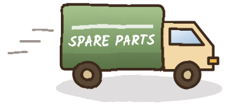
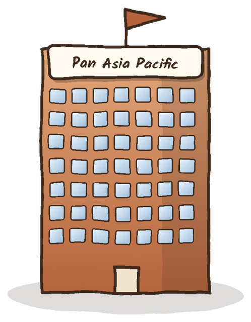
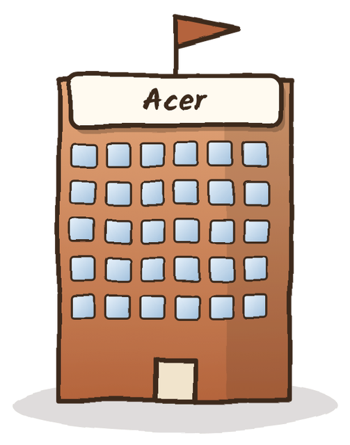
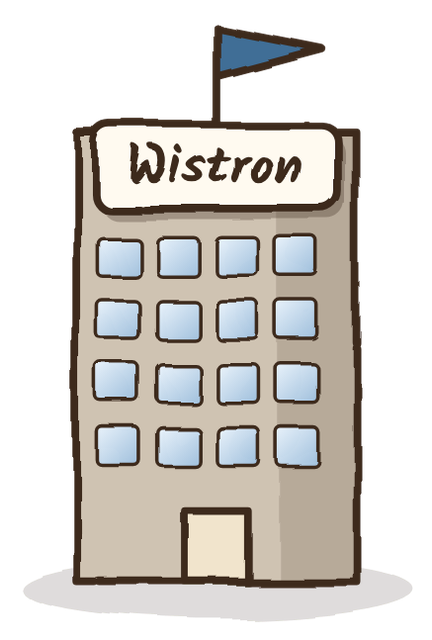
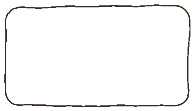
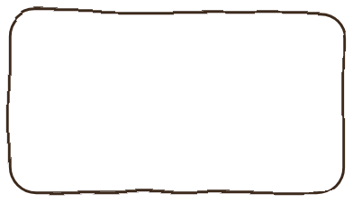
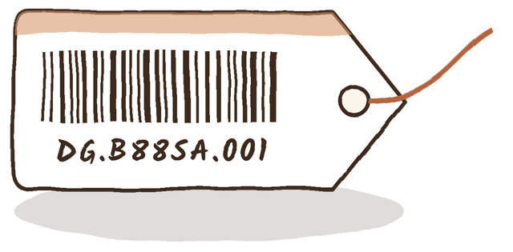
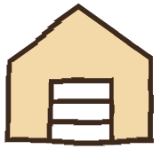
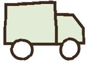

PAP Service
Logistics
Guide
泛亞太區服務物流說明簡冊
The web edition of the guide: eight parts and twenty-seven chapters, from the purpose of service logistics to the codes used every day. Start with Part 1, or open any chapter from the contents.本簡冊之網頁版共八篇、二十七章，自服務物流之目的至日常使用之代碼。建議自第一篇開始閱讀，亦可由目錄直接進入任一章。


Contents 目錄
Foundations
基礎概念
Part 1 establishes the purpose of service logistics, the path a spare part follows from demand to repair, and the three business models that define how brand owners and manufacturers divide their work.第一篇說明服務物流之目的、備品自需求至維修之完整路徑，以及品牌商與代工廠分工所依據之三種營運模式。
The Companies
相關企業


Part 2 introduces every company that appears in PAP service logistics: the brand owner, its after-sales subsidiary, the manufacturing partners, the former group companies, the current subsidiaries and the service partners in each country.第二篇介紹 PAP 服務物流中出現之每一家企業：品牌商、售後服務子公司、代工夥伴、泛宏碁集團、集團子公司及各國服務夥伴。
Organisation and Footprint
組織與據點
Part 3 describes Acer's global regions, the internal structure of PAP, the types of service sites, and the warehouse and local-assembly arrangements that support tenders.第三篇說明宏碁之全球區域、PAP 內部組織、服務據點類型，以及支援標案之倉庫與當地組裝安排。
HSN Group and the Process Change
海柏特集團與流程調整


HSN Group2026/12/1Part 4 describes HSN Group as an organisation within PAP's operations and explains the supply change that takes effect on 1 December 2026.第四篇說明 HSN 集團於 PAP 作業中之角色，以及 2026 年 12 月 1 日生效之供應流程調整。
Operations
作業流程
Part 5 covers the daily work of the PAP service logistics team: its functions, the systems it uses, the definition of the spare parts list and the maintenance of the Service BOM.第五篇說明 PAP 服務物流團隊之日常工作：主要職能、使用系統、備品清單之定義流程與 Service BOM 之維護。
Part Numbers and Codes
料號與代碼

Part 6 explains the structure of a service part number, provides graded decoding exercises and collects all region, subsidiary and HSN codes in one reference.第六篇說明服務料號之結構，提供分級解析練習，並彙整區域、子公司與 HSN 代碼。
Glossary
名詞說明
Part 7 introduces every abbreviation and specialised term used in this guide, grouped by subject. Each entry gives the full name, the Chinese equivalent and the meaning in PAP operations.第七篇依主題介紹本簡冊所有縮寫與專有名詞；每一條目列出全稱、中文名稱及於 PAP 作業中之意義。
Review
重點複習
Part 8 contains review questions covering every part of the guide, followed by the answer key, the list of public sources and the verification register.第八篇收錄涵蓋全冊之複習題、解答、公開資料來源及資料查證紀錄。
Service Logistics at PAP
泛亞太區服務物流簡介
In this chapter本章學習目標
- Define service logistics and its scope within Acer.定義服務物流及其於宏碁之範圍。
- Identify the position of PAP between headquarters and the subsidiaries.認識 PAP 介於總部與子公司之位置。
- Distinguish the organisational line from the supply line.區分組織關係與供應關係。
Start here先從這裡開始
Begin with a simple picture. When a notebook breaks, a repair technician needs the correct replacement part. Somebody has to predict how many of each part will be needed, buy them from the factory, store them, and deliver them to the repair site in time. That whole activity is service logistics. In Acer's Asia Pacific region, the team that does this work is called PAP service logistics. This chapter explains where that team sits in the company and what it is responsible for.
先建立一個簡單的畫面：筆記型電腦故障時，維修人員需要正確的替換零件。必須有人預估各零件之需求量、向工廠採購、妥善儲存，並及時送達維修據點，這整個活動即為「服務物流」。在宏碁亞太區，負責此項工作的團隊稱為 PAP 服務物流；本章說明此團隊於公司中之位置及其職責。
1.1Definition of Service Logistics服務物流之定義
Service logistics is the planning, purchasing, warehousing and distribution of spare parts that support after-sales repair. Its purpose is to ensure that the correct part reaches the correct repair site at the time the repair requires it.
服務物流係指支援售後維修之備品規劃、採購、倉儲與配送；其目的在於使正確之料件於維修所需之時點送達正確之維修據點。
Service logistics differs from production logistics. Production logistics supplies components to an assembly line in planned volumes, whereas service logistics responds to failures that occur in the field, so demand is irregular and spread across many part numbers.
服務物流與生產物流不同：生產物流依計畫量供應產線零件；服務物流則因應市場上發生之故障，需求不規則，且分散於大量料號。
1.2Pan Asia Pacific (PAP)泛亞太區
PAP (Pan Asia Pacific) is the Acer regional organisation responsible for Asia Pacific. The PAP service logistics team operates between the nation subsidiaries (NS) and headquarters (HQ). Its responsibilities are spare-parts planning, purchasing, inventory management, and maintenance of the Service BOM and part numbers.
PAP（泛亞太區）為宏碁負責亞太地區之區域組織。PAP 服務物流團隊介於各國子公司（NS）與總部（HQ）之間，負責備品規劃、採購下單、庫存管理，以及 Service BOM 與料號維護。
1.3Organisational Line and Supply Line組織關係與供應關係
The organisational line shows reporting authority: HQ directs PAP, and PAP coordinates the NS. The supply line shows the physical movement of parts: the ODM manufactures, PAP purchases, and the parts reach the NS. From 1 December 2026, HSN Group is inserted between PAP and the NS.
組織關係表示管理層級：HQ 督導 PAP，PAP 協調各 NS。供應關係表示料件之實體流向：ODM 生產、PAP 採購、料件送達 NS；自 2026 年 12 月 1 日起，PAP 與 NS 之間增加 HSN Group。
KEY POINT重點
The two lines must not be confused. PAP is a regional office in the organisational line and a purchaser in the supply line.
兩條關係線不可混淆：PAP 於組織關係中為區域辦公室，於供應關係中為採購者。
NOTE說明
The source material is internal company information for internal use only. Where this guide differs from the original documents, the original documents prevail.
原始資料屬公司內部資料，僅供內部使用；本簡冊內容與原始文件不一致時，以原始文件為準。
The Journey of a Spare Part
一件備品的旅程
In this chapter本章學習目標
- Describe the five stages from demand to repair.說明自需求至維修之五個階段。
- State which organisation performs each stage.指出各階段之執行單位。
Start here先從這裡開始
A spare part passes through five hands before it reaches the customer. Reading the five stages in order gives a map of the whole guide: every later chapter explains one part of this map in greater detail. Keep the five stages in mind as reference points.
一件備品在送達客戶之前，經過五個階段。依序閱讀五個階段即可掌握本簡冊之全貌：之後各章皆為此地圖中某一部分之詳細說明。請將五個階段作為閱讀時的定位點。

Warehouse倉儲與料號
Supply供應各國2.1Stage 1 — Demand Planning需求規劃
The nation subsidiaries raise demand for spare parts. PAP consolidates these requests into a regional forecast and submits it to headquarters.
各國子公司提出備品需求；PAP 彙整為區域預測並提交總部。
2.2Stage 2 — Purchasing採購下單
According to the plan, PAP places purchase orders (POs) with the ODM, for example Compal. The PO is created in the CSS system and confirmed to the ODM through the PLS system.
PAP 依規劃向 ODM（例如仁寶）下達採購單（PO）；採購單於 CSS 建立，並經 PLS 向 ODM 確認。
2.3Stage 3 — Warehousing and Part Numbers倉儲與料號
PAP manages the central warehouse and its inventory, and maintains the Service BOM and the service part numbers that identify each part.
PAP 管理中央倉庫與庫存，並維護 Service BOM 及識別各料件之服務料號。
2.4Stage 4 — Supply to the Countries供應各國
Parts are supplied to the nation subsidiaries. From 1 December 2026, the supply passes through HSN Group (Chapter 17).
料件供應至各國子公司；自 2026 年 12 月 1 日起改經由 HSN Group 供應（見第 17 章）。
2.5Stage 5 — Repair維修服務
Service centres and authorised service providers (ASPs) in each country complete the repair for the customer.
各國服務中心與授權服務商（ASP）為客戶完成維修。
KEY POINT重點
PAP is directly responsible for stages 1 to 4. Stage 5 is performed in each country.
第 1 至第 4 階段由 PAP 直接負責；第 5 階段由各國執行。
Business Models: OEM, ODM and OBM
營運模式：原廠委託製造、委託設計製造與自有品牌
In this chapter本章學習目標
- Define OEM, ODM and OBM.定義 OEM、ODM 與 OBM。
- Compare who performs design, manufacturing and sales in each model.比較各模式中設計、生產與銷售之分工。
- Interpret the term OEM correctly according to context.依上下文正確解讀 OEM 一詞。
Start here先從這裡開始
Before studying the companies, it is necessary to understand three abbreviations that describe how companies divide the work of making a product: who designs it, who builds it, and whose name appears on it. The abbreviations are OEM, ODM and OBM. They are used throughout the industry and throughout this guide.
在認識各公司之前，必須先理解三個描述產品分工方式的縮寫：由誰設計、由誰生產、以誰的名義銷售。此三個縮寫為 OEM、ODM 與 OBM，於產業及本簡冊中廣泛使用。
OEM, ODM and OBM are the three common business models in the electronics industry. The models differ in which party performs design, manufacturing and brand management.
OEM、ODM 與 OBM 為電子產業常見之三種營運模式，差異在於研發設計、生產製造與品牌由何方負責。
Read each branch top to bottom: the model, then who does each of the three jobs.
每一分支由上往下讀：先看模式，再看三項工作各由誰負責。
Compal designs and builds for Acer → ODM. Acer sells under its own brand → OBM.
3.1OEM — Original Equipment Manufacturer原廠委託製造
The brand owner provides the design and specification. The manufacturer builds the product to that design, and the product is sold under the brand owner's name.
品牌商提供設計與規格，代工廠依設計生產，產品以品牌商之品牌銷售。
3.2ODM — Original Design Manufacturer委託設計製造
The manufacturer both designs and builds the product according to the brand owner's requirements; the product is sold under the brand owner's name. The cooperation between Acer and Compal follows this model.
代工廠依品牌商之規格需求負責設計與生產，產品以品牌商之品牌銷售；宏碁與仁寶之合作即屬此模式。
3.3OBM — Original Brand Manufacturer自有品牌
The company markets and sells products under its own brand and defines the product. Production may be performed in-house or outsourced to an ODM or OEM. Acer is an OBM.
企業以自有品牌行銷與銷售並主導產品定義；生產可自行或委託 ODM／OEM。宏碁屬 OBM。
3.4Note on Usage用語提醒
In the Taiwanese industry, OEM usually means building to a client's design. In the Western PC industry, a PC OEM often refers to the brand owner itself. The term must therefore be read in context.
台灣產業中 OEM 多指依客戶設計代工；歐美 PC 產業之「PC OEM」常指品牌電腦廠商本身，應依上下文判斷。
3.5The Models in PAP Operations於泛亞太區作業中之應用
- PAP's purchase orders are issued to the ODM and confirmed through PLS.PAP 之採購單下達予 ODM，並經 PLS 確認。
- In the SPL definition flow, the ODM supplies the B sample, the SPL draft and the quotation.於 SPL 定義流程中，ODM 提供 B 樣品、SPL 草稿與報價。
- The ODM updates the mass-production (MP) Service BOM every month.ODM 每月更新量產（MP）Service BOM。
The Business Ecosystem
企業生態與關係
In this chapter本章學習目標
- Place each company in the flow from manufacturing to the customer.將各企業置於自生產至客戶之流向中。
- Explain the three principal companies and their roles.說明三家主要企業及其角色。
Start here先從這裡開始
Many company names appear in PAP service logistics. The easiest way to remember them is to place each company on a line that runs from the factory to the customer: factories on the left, the brand in the middle, sales and repair on the right, and the customer at the end. This chapter draws that line.
PAP 服務物流涉及許多公司名稱。最容易記憶的方法，是將每一家公司放在一條從工廠到客戶的直線上：左側為工廠，中間為品牌，右側為銷售與維修，末端為客戶。本章即描繪此一直線。
4.1The Ecosystem from Left to Right企業生態圖
The diagram follows the flow of products and parts. ODMs design and build products; Acer manages the brand and the regional organisation; channel and repair partners deliver sales and service; customers receive the product and the repair.
圖示依產品與備品之流向排列：代工廠設計生產 → 宏碁品牌與區域組織 → 通路與維修服務 → 客戶。
Customer types客戶類型
- Consumers and business customers purchase products through retail and commercial channels.消費者與企業客戶經由零售及商用通路購買。
- Tender customers, such as government agencies and police forces, purchase through public tenders (Chapter 15).標案客戶（如政府機關、警政單位）經由公開標案採購（見第 15 章）。
4.2Relationship Chart企業關係圖
Dashed = external partner
虛線框表示外部合作廠商
4.3Roles at a Glance角色一覽
| Company 公司 | Relationship to Acer 與 Acer 之關係 | Main role 主要角色 |
|---|---|---|
| Acer 宏碁 | The brand owner 品牌商本身 | Designs, markets and sells under its own brand; PAP is its Pan Asia Pacific organisation. 以自有品牌設計、行銷與銷售；PAP 為其泛亞太區組織。 |
| HSN 海柏特 | Acer subsidiary 子公司 | Multi-brand authorised repair; from 1 Dec 2026 supplies the parts purchased by PAP. 多品牌授權維修；2026/12/1 起供應 PAP 採購之料件。 |
| Compal 仁寶 | External ODM partner 外部 ODM | Designs and builds to Acer's specification and receives POs from PAP. 依規格設計生產，接受 PAP 之採購單。 |
Acer
宏碁
In this chapter本章學習目標
- State the basic profile of Acer.說明宏碁之基本資料。
- Describe Acer's regional organisation.說明宏碁之區域組織。
- Trace the milestones of Acer and of PAP.掌握宏碁與 PAP 之發展沿革。
Start here先從這裡開始
Acer is the brand owner, and PAP is part of Acer. Everything in this guide ultimately serves Acer's customers. This chapter gives the essential facts about the company: when it was founded, where it is based, how it is organised by region, and the main events in its history.
宏碁為品牌商，PAP 為宏碁之一部分；本簡冊所述之一切，最終皆為服務宏碁的客戶。本章提供關於宏碁之基本事實：創立時間、總部所在、區域組織方式及發展沿革之重要事件。
5.1Profile基本資料
Acer is a Taiwanese information-technology brand founded in 1976 and headquartered in Xizhi, New Taipei City. The year 2026 marks its 50th anniversary.
宏碁為 1976 年創立之台灣資訊科技品牌，總部位於新北市汐止區；2026 年為創立 50 週年。
What this means名詞說明
- Multitech
- Acer's original company name. The company was founded in 1976 as Multitech Electronics Inc. and was renamed Acer in 1987; it is the same company under a new name.宏碁創立時之公司名稱（Multitech Electronics Inc.）；1987 年更名為 Acer，屬同一家公司更名。
- Forerunner 前身
- The earlier name or organisation from which the present company developed.「前身」指公司在現名或現行組織之前所使用之名稱或組織。
- Stock code 2353
- The four-digit number that identifies Acer's shares on the Taiwan Stock Exchange (TWSE), Taiwan's main board for listed companies (上市).股票代號為公司股票於臺灣證券交易所（上市市場）之識別編號。
- Chairman & CEO
- Jason Chen holds both the chair of the board of directors and the position of chief executive officer.陳俊聖同時擔任董事會主席與最高經營主管。
- PA · EMEA · PAP · ACCN
- Acer's four operating regions in the training material: the Americas; Europe, Middle East and Africa; Pan Asia Pacific; and China (Chapter 12). Acer's public financial reporting uses three regions: Pan America, EMEA and Pan Asia Pacific.教材所列宏碁四大營運區域：美洲、歐非中東、泛亞太、中國（見第 12 章）；宏碁對外財報則分為泛美、歐洲中東非洲、泛亞太三區。
5.2Organisation組織架構
According to the training material, Acer headquarters oversees four regions. PAP was formed by combining TWN and AAP, and eleven nation subsidiaries report to PAP.
依內部教材，宏碁總部轄下設有四個區域；PAP 由 TWN 與 AAP 整併而成，其下設 11 個國家子公司。
5.3Main Business主要業務
| Line 業務 | Description 說明 |
|---|---|
| Personal computers 個人電腦 | Notebooks (including Chromebooks) and desktops. 筆記型電腦（含 Chromebook）與桌上型電腦。 |
| Displays and peripherals 顯示與周邊 | Monitors, tablets and peripherals. 顯示器、平板與周邊產品。 |
| Business and servers 商用與伺服器 | Servers, storage and other business products. 伺服器、儲存設備等商用產品。 |
| After-sales service 售後服務 | Repair through the NS, authorised service sites and HSN. 由 NS、授權據點與海柏特提供維修。 |
5.4Milestones of Acer宏碁發展沿革
- 1976Founded創立
Founded on 1 August with NT$1 million in capital as Multitech, focused on microprocessor technology.
以新台幣 100 萬元創立，名為 Multitech，以微處理器技術為核心。
- 1982MicroProfessor-II小教授二號
Launched Taiwan's first 8-bit home computer.
推出台灣第一部 8 位元家用電腦。
- 1987Renamed Acer更名
The name derives from Latin and denotes sharpness and ability.
品牌名稱源自拉丁文，意為敏銳、能幹。
- 1988IPO股票上市
Completed its initial public offering in April.
4 月完成首次公開發行。
- 2001Brand and manufacturing separated品牌與代工分立
Contract manufacturing became Wistron and the communications and multimedia business became BenQ; Acer concentrated on its own brand.
代工製造分立為緯創，通訊與多媒體更名明基；宏碁專注自有品牌。
- 2007Acquired Gateway收購 Gateway
Acquired Gateway in the United States, including the eMachines brand.
收購美國 Gateway 並取得 eMachines 品牌。
- 2008Acquired Packard Bell收購 Packard Bell
Acquired a controlling interest in Packard Bell in Europe.
取得歐洲 Packard Bell 控制權。
- 2014New leadership and regions經營團隊與區域調整
Jason Chen became President and CEO; China, Taiwan and Asia Pacific were grouped into one Pan-Asia Pacific operation from 1 August.
陳俊聖出任總經理暨執行長；8 月 1 日起中國、台灣與亞太整合為泛亞太區。
- 2016Core and new businesses separated核心與新事業分立
Operations were divided into Core Business and New Business; Andrew Hou was appointed president of Pan Asia Pacific.
營運劃分為核心事業與新事業；Andrew Hou 出任泛亞太區總裁。
- 2017Chairman and CEO董事長暨執行長
Jason Chen became Chairman and CEO.
陳俊聖出任董事長暨執行長。
- 202650th anniversary創立 50 週年
The Acer group marks fifty years since its founding.
宏碁集團邁入創立 50 週年。
5.5Milestones of PAP泛亞太區沿革
- 2014Pan-Asia Pacific formed成立泛亞太區
China, Taiwan and Asia Pacific came under one regional management to improve resource allocation and competitiveness.
中國、台灣與亞太納入單一區域管理，以強化資源配置與競爭力。
- 2016Regional leadership區域負責人
Andrew Hou became president, covering Asia Pacific, China, Taiwan, Korea, Japan, Australia and New Zealand.
Andrew Hou 出任總裁，轄管亞太各國、中國、台灣、韓國、日本、澳洲與紐西蘭。
- 2016/17TWN and AAP mergedTWN 與 AAP 整併
TWN and AAP merged into PAP; ACCN (China) operates separately. (Training material)
TWN 與 AAP 整併為 PAP；ACCN 獨立運作（教材）。
- 2024Local manufacturing在地製造
Reports indicated plans to expand local manufacturing in India and Indonesia.
報導指出規劃擴大於印度與印尼之在地製造。
NOTE說明
Public sources describe a 2014 Pan-Asia Pacific that included China, whereas the training material describes TWN and AAP merging in 2016/2017 with ACCN separate. The two accounts may reflect different stages of reorganisation.
公開資料所載 2014 年泛亞太區包含中國；教材所載為 2016/2017 年 TWN 與 AAP 整併、ACCN 獨立。兩者可能反映不同階段之組織調整。
Highpoint Service Network
海柏特
In this chapter本章學習目標
- State the origin and profile of HSN.說明海柏特之由來與基本資料。
- Read HSN country company codes.解讀 HSN 各國公司代碼。
- Explain the relationship between HSN and PAP.說明海柏特與 PAP 之關係。
Start here先從這裡開始
Highpoint Service Network is a repair company in the Acer group. Its name appears often because, from December 2026, the spare parts that PAP buys will pass through this company on their way to each country. Understanding the company now makes the later chapters on the process change easier to follow.
海柏特為宏碁集團旗下之維修公司。其名稱經常出現，是因為自 2026 年 12 月起，PAP 採購之備品將經由此公司送往各國。先認識此公司，之後關於流程調整的章節便容易理解。
6.1Profile基本資料
HSN is a multi-brand authorised repair provider that originated in Acer's after-sales unit in Malaysia. It serves six markets in Taiwan and Southeast Asia. Country company codes consist of HSN followed by a country letter; for example, HSNM is the Malaysian company.
HSN 為源自宏碁馬來西亞售後服務單位之多品牌授權維修服務商，服務台灣與東南亞 6 個市場；各國公司代碼由 HSN 加國別字母組成，例如 HSNM 為馬來西亞公司。
What this means名詞說明
- Origin 前身
- HSN grew out of the after-sales company Acer set up in Malaysia in 1999; the Taiwan holding company was formed in 2018 to take over and expand that business.HSN 源自宏碁 1999 年於馬來西亞設立之售後服務公司；2018 年於台灣成立控股公司以承接並擴展此業務。
- TPEx 上櫃
- The Taipei Exchange, Taiwan's over-the-counter market. Listing there (上櫃) is a step below the main TWSE board (上市).證券櫃檯買賣中心；「上櫃」為次於證交所「上市」之掛牌市場。
- Stock code 6884
- The number identifying HSN shares on TPEx.海柏特於櫃買中心之股票代號。
- Service points 服務據點
- Locations where customers can hand in or collect units for repair, including centres operated by partners.客戶送修或取件之地點，含合作夥伴營運之據點。
6.2Country Companies各國公司
India and Australia are planned, and Japan is under evaluation. Company codes follow the training material.
印度、澳洲規劃中，日本評估中；公司代碼依內部教材。
6.3Main Business主要業務
- Authorised repair — authorised by nearly 50 brands to repair more than 100 product types.授權維修：取得近 50 個品牌授權，可維修逾 100 種品項。
- Out-of-warranty (OOW) repair — after-sales repair outside warranty, including mainboard repair.保固外維修，包括主機板維修。
- On-site service — on-site maintenance, system upgrades and installation.到府維修、系統升級與安裝。
- Warranty and support — the Acer Extended Warranty Plan and a toll-free call centre.Acer 延長保固方案及免付費客服專線。
KEY POINT重點
The HSN strategy is multi-country, multi-product, multi-brand, with the aim of becoming the leading authorised repair brand in Asia Pacific.
經營策略為「多國、多品項、多品牌」，目標成為亞太第一之授權維修品牌。
6.4Milestones發展沿革
- 1999Origin前身成立
Acer set up a wholly owned after-sales subsidiary in Malaysia to repair Acer products.
宏碁於馬來西亞成立 100% 持股之售後服務子公司。
- 2018HSN established成立海柏特
Established in Taiwan as a wholly owned company; the group also has subsidiaries in the Philippines and Thailand (both 2018), Indonesia, and Vietnam (December 2020).
於台灣成立；集團另於菲、泰（均為 2018 年）、印尼及越（2020 年 12 月）設有子公司。
- 2022Public offering股票公開發行
Public offering (6884) took effect in January; joined the Emerging Stock Board the same year.
1 月公開發行生效；同年登錄興櫃。
- 2025Listed on TPEx上櫃
Listed on the Taipei Exchange on 17 December.
12 月 17 日轉上櫃。
- 2026PAP supply change供應流程調整
From 1 December, parts purchased by PAP are supplied through HSN Group. (Training material)
12 月 1 日起 PAP 採購之料件經由 HSN Group 供應（教材）。
6.5Relationship with PAP與泛亞太區之關係
- Jacky Lin (AVP) also serves as HSN Group GM.HSN Group GM 由 Jacky Lin（AVP）兼任。
- From 1 December 2026, parts purchased by PAP are supplied through HSN Group; Angelin, Hannah and Sherry transfer to HSN Group.自 2026/12/1 起 PAP 採購之料件改經 HSN Group 供應；Angelin、Hannah、Sherry 轉任 HSN Group。
Compal
仁寶
In this chapter本章學習目標
- State the profile and business structure of Compal.說明仁寶之基本資料與業務架構。
- Explain Compal's three duties toward PAP.說明仁寶對 PAP 之三項職責。
Start here先從這裡開始
Compal is the factory. It designs and builds notebooks for Acer and also supplies the spare parts that PAP orders. When this guide refers to "the ODM", the training material has Compal in mind.
仁寶即為工廠：為宏碁設計並生產筆記型電腦，亦供應 PAP 所訂購之備品。本簡冊提及「ODM」時，教材所指即為仁寶。
7.1Profile基本資料
Compal is a Taiwanese electronics manufacturer founded in 1984 and one of the world's leading notebook ODMs. It is the ODM named in the training material and a supplier to PAP.
仁寶為 1984 年創立之台灣電子製造商，為全球主要筆電 ODM 之一，亦為教材所載之 ODM 與 PAP 之採購對象。
What this means名詞說明
- Kinpo Group 金仁寶集團
- The Taiwanese business group whose members include Kinpo Electronics (金寶), Compal (仁寶) and AcBel Polytech (康舒). Kinpo Electronics set up Compal in 1984.成員包括金寶、仁寶與康舒科技之台灣企業集團；仁寶由金寶電子於 1984 年設立。
- ODM
- Original Design Manufacturer: Compal designs and builds products that are sold under the client's brand (Chapter 3).委託設計製造：仁寶設計並生產，以客戶品牌銷售（見第 3 章）。
- Stock code 2324
- The number identifying Compal shares on the Taiwan Stock Exchange.仁寶於證交所之股票代號。
7.2Business Structure業務架構
7.3Main Business主要業務
- Notebook ODM — designs and builds notebooks to brand specifications; the core business.筆電 ODM：依品牌規格設計生產，為核心業務。
- Smart devices — tablets, wearables and other devices.智慧裝置：平板、穿戴裝置等。
- Servers — including AI servers.伺服器，包括 AI 伺服器。
- Automotive and healthcare — automotive electronics and smart healthcare.車用電子與智慧醫療。
7.4Milestones發展沿革
- 1984Founded創立
Set up by Kinpo Electronics; initially produced CRT monitors.
由金寶電子設立，初期生產 CRT 監視器。
- 1987Renamed更名
Renamed Compal Electronics, Inc.
更名為仁寶電腦工業股份有限公司。
- 1989Entered portable PCs投入筆電
Began developing laptop computers; mass production started in November.
投入膝上型電腦開發，11 月量產。
- 1992Listed股票上市
Listed on the Taiwan Stock Exchange (2324).
於證交所上市。
- 2009Top notebook maker出貨居冠
Strong sales of the Acer netbooks it built made it the world's largest notebook maker by shipments.
承製之宏碁小筆電暢銷，筆電出貨居全球之冠。
- RecentBeyond PCs拓展非 PC
Expansion into servers, automotive electronics and smart healthcare.
拓展伺服器、車用電子與智慧醫療。
7.5Relationship with PAP與泛亞太區之關係
- PAP places POs with the ODM based on planning and NS demand; POs are created in CSS and confirmed through PLS.PAP 依規劃與 NS 需求下達 PO：於 CSS 建立，經 PLS 確認。
- In the SPL definition flow, the ODM provides the B sample, the SPL draft without prices, and the quotation.SPL 定義流程中，ODM 提供 B 樣品、未含價格之 SPL 草稿及報價。
- The MP Service BOM is updated monthly by the ODM.量產 Service BOM 由 ODM 每月更新。
Manufacturing Partners
代工夥伴
In this chapter本章學習目標
- Name Taiwan's five major notebook ODMs.列舉台灣五大筆電代工廠。
- Describe each manufacturer's relationship with Acer.說明各代工廠與 Acer 之關係。
Start here先從這裡開始
Acer does not build its own computers. Several Taiwanese manufacturers build them, and Compal is only one of them. This chapter introduces each manufacturer so that their names are recognisable when they appear in reports and news.
宏碁並不自行製造電腦，而是由數家台灣製造商代工，仁寶僅為其中之一。本章逐一介紹各製造商，以便於報表與新聞中出現時能夠辨識。
Acer is a brand owner; its notebooks and desktops are designed and built mainly by Taiwanese ODMs. The manufacturers below have a reported relationship with Acer. The training material names Compal.
Acer 為品牌商，筆電與桌機主要委由台灣 ODM 設計生產；以下為公開報導中與 Acer 有合作紀錄之代工廠，教材所載之 ODM 為仁寶。
8.1How Acer's Notebook Orders Are Split宏碁筆電代工分配
Wistron 1H 2009 = 26–28 %; remaining shares approximate
數值為約略比例
- Taiwan's five major notebook ODMs are Quanta, Compal, Wistron, Inventec and Pegatron.台灣五大筆電代工廠為廣達、仁寶、緯創、英業達與和碩。
- According to DIGITIMES, in the first half of 2009 all Acer notebooks came from four Taiwanese ODMs: Compal about 45 %, Wistron 26–28 %, followed by Quanta; a Commercial Times report on Acer's first-phase 2009 order release gave Compal about 35 %.據 DIGITIMES 報導，2009 上半年 Acer 筆電全數由四家台灣 ODM 生產：仁寶約 45 %、緯創 26–28 %，廣達次之；工商時報對宏碁 2009 年第一階段釋單之報導則為仁寶約 35 %。
- According to a 2013 DIGITIMES report, for 2014 Quanta and Compal each received about 40 % of orders, and Wistron fell from second to third supplier.據 DIGITIMES 2013 年報導，2014 年廣達與仁寶各取得約四成，緯創由第二降為第三。
Published allocations end with the 2014 orders; Acer and its ODMs do not publish later breakdowns, so current shares are not stated here.
公開之分配資料止於 2014 年訂單；宏碁與各代工廠未再公布之後的分配，故本簡冊不列現行比例。
8.2Quanta Computer廣達電腦
What this means名詞說明
- Barry Lam · C.C. Leung
- 林百里 and 梁次震, the two co-founders of Quanta.廣達之兩位共同創辦人。
- Stock code 2382
- Quanta's share number on the Taiwan Stock Exchange.廣達於證交所之股票代號。
- 14-inch / 17-inch models
- Notebook screen sizes, measured diagonally. The 2014 report divided Acer's orders among ODMs by model size.筆電螢幕尺寸；2014 年報導依機種尺寸分配訂單。
What it does主要業務
Founded in 1988 by Barry Lam and C.C. Leung; listed in 1999. A notebook ODM serving Acer, HP, Dell and Apple.
1988 年由林百里、梁次震創立，1999 年上市；筆電 ODM，客戶包括 Acer、HP、Dell、Apple。
Relationship with Acer與 Acer 的關係
Has shared Acer notebook orders since 2002; reportedly received about 40 % of 2014 orders (14-inch and 17-inch models); reported in 2017 as the largest notebook ODM for Apple, Acer and Asus.
2002 年起分享 Acer 訂單；據報導 2014 年取得約四成（14、17 吋）；2017 年報導為 Apple、Acer、華碩最大筆電 ODM。
8.3Compal Electronics仁寶電腦
What this means名詞說明
- Aspire One
- Acer's netbook line launched in 2008; small, low-cost notebooks.宏碁 2008 年推出之小筆電系列。
- Netbook 小筆電
- A small, inexpensive notebook designed mainly for web use.以上網為主之小型平價筆電。
- Q2 2018
- The second quarter (April–June) of 2018.2018 年第二季（4 至 6 月）。
What it does主要業務
A Kinpo Group member founded in 1984 and listed in 1992; one of the world's leading notebook ODMs.
金仁寶集團成員，1984 年創立、1992 年上市。
Relationship with Acer與 Acer 的關係
The ODM named in the training material. Acer's largest ODM in 1H 2009 (about 45 % according to DIGITIMES); reported in October 2008 to take over Acer's 2009 Aspire One netbook orders with Wistron; reportedly about 40 % of 2014 orders (15-inch models); the world's largest notebook maker in Q2 2018 on large Dell and Acer orders. See Chapter 7.
教材所載之 ODM；2009 上半年為 Acer 最大代工廠（據 DIGITIMES 報導約 45 %）；據 2008 年 10 月報導，與緯創承接 Acer 2009 年 Aspire One 訂單；據報導 2014 年約四成（15 吋）；2018 Q2 成為全球最大筆電代工廠。詳見第 7 章。
8.4Wistron Corporation緯創資通
What this means名詞說明
- Spun off 分立
- Separated from the parent company to become an independent company.自母公司分出成為獨立公司。
- Design and manufacturing division 研製服務部門
- The Acer unit that designed and built products, which became Wistron.宏碁負責研發製造之部門，即緯創前身。
What it does主要業務
Spun off from Acer's design and manufacturing division on 30 May 2001 and listed on 19 August 2003; an ODM for notebooks, desktops, servers and storage.
2001 年 5 月 30 日自宏碁研製服務部門分立，2003 年上市；筆電、桌機、伺服器與儲存設備之 ODM。
Relationship with Acer與 Acer 的關係
Formerly Acer's own manufacturing arm. According to DIGITIMES, it supplied 26–28 % of Acer notebooks in 1H 2009 and was Acer's second-largest supplier in 2013 and third in 2014.
原為宏碁自有製造部門；據 DIGITIMES 報導，2009 上半年供應 26–28 %；2013 年第二、2014 年第三。
8.5Inventec Corporation英業達
What this means名詞說明
- Blu-ray notebook 藍光筆電
- A notebook fitted with a Blu-ray disc drive.配備藍光光碟機之筆電。
- CULV
- Consumer Ultra-Low Voltage: an Intel low-power processor platform used in very thin notebooks with long battery life.英特爾之消費性超低電壓處理器平台，用於長續航之超薄筆電。
What it does主要業務
Founded on 9 June 1975 and listed on 13 November 1996; manufactures notebooks and servers.
1975 年創立，1996 年上市；製造筆電與伺服器。
Relationship with Acer與 Acer 的關係
Won Acer orders in 2006, all of Acer's Blu-ray notebook orders for 2008, and Acer's CULV ultra-thin notebook orders in 2009. Most reported orders date from that period; early-2020 reports still listed Acer among its notebook customers.
2006 年取得 Acer 訂單；2008 年取得藍光筆電全部訂單；2009 年取得 CULV 訂單；2020 年初報導仍列 Acer 為客戶。
8.6Pegatron Corporation和碩聯合科技
What this means名詞說明
- Split from Asus 自華碩分割
- Pegatron was created when Asus separated its manufacturing business in 2008; Unihan (永碩) took the casings and non-PC business.2008 年華碩分割代工業務成立和碩；機殼與非 PC 業務歸永碩。
- Investor conference 法說會
- A meeting in which a listed company reports results and outlook to investors.上市公司向投資人說明營運之會議。
What it does主要業務
Registered in June 2007 and split from Asus in 2008; listed on 24 June 2010.
2007 年登記，2008 年自華碩分割，2010 年上市。
Relationship with Acer與 Acer 的關係
At its August 2010 investor conference it listed 2011 notebook orders from Lenovo, Acer and Asus. Its business has since shifted toward smartphone assembly; a 2024 analyst report names Apple, Google, Microsoft and Asus as its main customers, without Acer.
2010 年 8 月法說會列出 2011 年筆電訂單含聯想、Acer、華碩；其後業務轉向手機組裝，2024 年研究報告所列主要客戶為 Apple、Google、微軟與華碩，未含 Acer。
8.7Hon Hai / Foxconn鴻海精密
What this means名詞說明
- Hon Hai / Foxconn
- Hon Hai Precision Industry Co., Ltd. (鴻海精密) is the company; it does business internationally under the trade name Foxconn.鴻海精密為公司名稱；國際上以 Foxconn 為商用名稱。
- EMS
- Electronics Manufacturing Services: building electronic products to clients' designs at large scale.電子製造服務：為客戶大量代工電子產品。
- Small-form-factor desktop 小型桌機
- A desktop computer with a compact case.機殼體積較小之桌上型電腦。
What it does主要業務
Founded on 20 February 1974 and listed on the Taiwan Stock Exchange in 1991; the world's largest electronics manufacturing services (EMS) provider.
1974 年創立，1991 年上市；全球最大電子製造服務（EMS）廠商。
Relationship with Acer與 Acer 的關係
The relationship is mainly in desktops: first Foxconn-built Acer desktops sold in the US and China in 2003; small-form-factor desktops in Taiwan in 2006; notebook negotiations in 2010.
合作以桌機為主：2003 年首批代工桌機；2006 年小型桌機；2010 年洽談筆電訂單。
8.8Relevance to PAP Operations與泛亞太區作業之關係
PAP's POs and spare parts flow through the ODM. The training material names only Compal; dealings with the other manufacturers are not specified.
PAP 之採購與備品經由 ODM；教材僅以仁寶為例，其他代工廠之往來未載明。
The Acer Family
泛宏碁集團
In this chapter本章學習目標
- Explain the second re-engineering of 2000.說明 2000 年之第二次再造。
- Introduce Wistron, BenQ/Qisda and AUO.介紹緯創、明基／佳世達與友達。
Start here先從這裡開始
Some well-known companies, such as Wistron and BenQ, were once part of Acer. They became independent in a reorganisation around the year 2000. Knowing this history explains why these companies are still described as the "Acer family" even though Acer no longer controls them.
緯創、明基等知名公司曾為宏碁之一部分，於 2000 年前後之改組中獨立。了解此段歷史，即可明白為何這些公司雖已不受宏碁控制，仍被稱為「泛宏碁集團」。
Before 2000, the Acer group combined the brand, contract manufacturing and peripherals. The second re-engineering at the end of 2000 divided the group into Acer (brand), BenQ and Wistron. The resulting companies developed independently and are known as the pan-Acer group or the ABW family (Acer, BenQ, Wistron).
2000 年以前宏碁集團同時擁有品牌、代工與周邊事業；2000 年底「第二次再造」將集團分為宏碁、明基與緯創，此後各自獨立發展，合稱泛宏碁集團或「ABW family」。
9.1How the Group Split分拆關係
Dashed = independent after the split
虛線＝分拆後獨立
9.2Timeline分拆沿革
- 1984Acer Peripherals founded明碁電腦成立
Acer's peripherals company and the forerunner of BenQ and Qisda.
宏碁旗下周邊產品公司，明基與佳世達之前身。
- 1996Acer Display Technology達碁科技成立
Founded on 12 August in the Hsinchu Science Park as the group's display-panel company.
8 月 12 日於新竹科學園區成立之面板公司。
- 2000Second re-engineering第二次再造
The group was divided into Acer, BenQ and Wistron; founder Stan Shih later proposed the name ABW family.
集團分為宏碁、明基、緯創；施振榮其後提出 ABW family 之稱。
- 2001Wistron spun off緯創分立
Then-president Simon Lin led 8,400 employees into Wistron in May; listing followed in August 2003 because Taiwan had no spin-off law at the time.
林憲銘率 8,400 名員工分立；因當時無企業分割法規，2003 年方上市。
- 2001BenQ renamed; AUO formed明基更名、友達成立
Acer Peripherals became BenQ; Acer Display Technology merged with Unipac and became AU Optronics on 1 September.
明碁更名明基；達碁與聯友合併，9 月 1 日更名友達。
- 2006Acer sells its BenQ stake出清明基持股
Acer disposed of its remaining BenQ shares; AUO absorbed Quanta Display on 1 October.
宏碁處分明基持股；友達合併廣輝。
- 2007BenQ and Qisda separate明基與佳世達分割
The brand business kept the BenQ name; contract manufacturing was renamed Qisda.
品牌保留 BenQ，代工製造更名佳世達。
9.3Wistron Corporation緯創資通
What this means名詞說明
- Listed 上市
- Shares admitted for trading on the Taiwan Stock Exchange.股票於臺灣證券交易所掛牌交易。
What it does主要業務
An ODM for notebooks, desktops, servers and storage.
筆電、桌機、伺服器與儲存設備之 ODM。
Relationship with Acer與 Acer 的關係
Acer's former design and manufacturing division; independent since the spin-off and still one of Acer's ODMs (Chapter 8).
宏碁原研製服務部門；分立後獨立，仍為 Acer 代工廠之一（見第 8 章）。
9.4BenQ / Qisda明基／佳世達
What this means名詞說明
- BenQ / Qisda
- Two companies from one origin: BenQ keeps the brand business, Qisda the contract manufacturing.同一源頭之兩家公司：BenQ 經營品牌，佳世達經營代工製造。
- BenQ Group 明基友達集團
- The group formed by BenQ, Qisda and AUO.由明基、佳世達與友達組成之集團。
What it does主要業務
BenQ is the brand for monitors and projectors; Qisda is the contract-manufacturing and diversified business group. BenQ, Qisda and AUO together form the BenQ Group.
BenQ 為顯示器、投影機等自有品牌；佳世達為代工與多元事業集團；三者合稱明基友達集團。
Relationship with Acer與 Acer 的關係
Formerly Acer Peripherals, later Acer Communications & Multimedia; renamed BenQ on 5 December 2001 (BenQ press release) and independent since Acer sold its stake in 2006.
前身為明碁電腦（後稱宏碁通訊與多媒體）；依 BenQ 新聞稿於 2001 年 12 月 5 日更名為 BenQ，2006 年宏碁出清持股後獨立。
9.5AU Optronics (AUO)友達光電
What this means名詞說明
- Display panel 面板
- The flat screen component used in monitors, notebooks and televisions.用於顯示器、筆電與電視之平面顯示元件。
- Unipac 聯友光電
- The panel maker that merged with Acer Display Technology in 2001 to form AUO.2001 年與達碁合併成立友達之面板廠。
What it does主要業務
A display-panel manufacturer; absorbed Taiwan Color Optics in October 2016.
顯示器面板製造商；2016 年合併台灣國際彩光。
Relationship with Acer與 Acer 的關係
Its forerunner, Acer Display Technology, was the group's panel company; renamed AUO after merging with Unipac and now independent.
前身達碁科技為集團面板公司；與聯友合併後更名友達，現已獨立。
Group Subsidiaries
集團子公司
In this chapter本章學習目標
- Explain Acer's subsidiary strategy.說明宏碁之子公司策略。
- Introduce each subsidiary and its relationship with Acer.介紹各子公司及其與宏碁之關係。
Start here先從這裡開始
Acer also owns a number of smaller companies that it created from its own departments and later listed on the stock market. Two of them matter directly to service logistics: Weblink, which sells Acer products in Taiwan, and Highpoint Service Network, which repairs them. The others are introduced so that the whole group is understood.
宏碁另持有多家由內部部門分拆並上市櫃之子公司。其中兩家與服務物流直接相關：展碁負責在台灣銷售宏碁產品，海柏特負責維修；其餘子公司亦一併介紹，以完整理解集團全貌。
10.1Subsidiary Strategy子公司策略
Since 2019, Acer has spun off internal businesses and taken them public; the press refers to this group as the tiger team. Under Chairman and CEO Jason Chen, the approach is to identify a trend within the core business, scale it, and use an IPO to test the unit. Employees found the businesses internally, and Acer retains majority control.
宏碁自 2019 年起陸續分拆內部事業並推動上市櫃，媒體稱為「老虎隊」。陳俊聖之作法為：於核心事業中找出趨勢、擴大規模，再以 IPO 檢驗體質；由員工內部創業，宏碁保持多數持股。
- Seven subsidiaries were listed or traded on the emerging board by July 2022: Weblink, AEB, ACSI, AST, AOpen, Acer Medical and HSN.2022 年 7 月已有 7 家子公司上市櫃或登錄興櫃。
- According to Wealth Magazine, the group's 11th listing in Taiwan, an emerging-board registration, came in November 2024; Acer announced in November 2025 that Opticon (Japan) would become the 16th once its investment closes.據財訊報導，2024 年 11 月登錄興櫃者為集團在台第 11 家掛牌公司；宏碁 2025 年 11 月宣布，Opticon 於投資完成後將成為第 16 家。
The number quoted in the press changes with the counting date and with whether emerging-board companies are included. The authoritative list is maintained on Acer's investor-relations site.
媒體所稱之家數隨統計日期及是否計入興櫃公司而不同；正式名單以宏碁投資人關係網站為準。
10.2Weblink International展碁國際
What this means名詞說明
- General agent 總代理
- The company authorised to handle a brand's entire distribution in a market; Weblink performs this role for Acer in Taiwan.於特定市場獲授權全面負責品牌通路之公司。
- 3C
- Computers, communications and consumer electronics.電腦、通訊與消費性電子產品。
What it does主要業務
A 3C distributor carrying more than 150 brands and Taiwan's largest software distributor; added Lenovo's full line and Xiaomi e-commerce distribution in 2024.
3C 通路商，代理逾 150 個品牌，為台灣最大軟體代理商。
Relationship with Acer與 Acer 的關係
Acer's general agent in Taiwan, jointly with Synnex, since July 2014, handling marketing, service, logistics and payment; chaired since May 2026 by its President, who succeeded Jason Chen. A downstream channel partner.
2014 年 7 月起與聯強同為 Acer 台灣總代理，負責行銷、服務、物流與金流；2026 年 5 月起由總經理林佳璋接任董事長（接替陳俊聖）；屬下游通路。
10.3Highpoint Service Network海柏特
What this means名詞說明
What it does主要業務
Multi-brand authorised repair in six markets with more than 400 service points.
多品牌授權維修，六個市場、逾 400 處據點。
Relationship with Acer與 Acer 的關係
Grew out of Acer's after-sales unit in Malaysia; supplies PAP-purchased parts from 1 December 2026. See Chapter 6.
源自宏碁馬來西亞售後單位；詳見第 6 章。
10.4Acer Cyber Security (ACSI)安碁資訊
What this means名詞說明
- SOC
- Security Operations Centre: a team that monitors clients' systems for cyber-attacks around the clock.資安監控中心：全天候監控客戶系統之資安威脅。
What it does主要業務
Security operations centre (SOC) monitoring, security testing and consulting.
資安監控中心（SOC）、資安檢測與顧問服務。
Relationship with Acer與 Acer 的關係
51.87 % owned by Acer according to ACSI's annual report; listed on 30 October 2019 as Taiwan's first listed cybersecurity company.
依安碁資訊年報，宏碁持股 51.87%；台灣首家上櫃資安公司。
10.5Acer e-Enabling Service Business (AEB)宏碁資訊
What this means名詞說明
- Microsoft Azure
- Microsoft's cloud-computing platform; AEB is a Microsoft Azure partner.微軟雲端平台；宏碁資訊為其合作夥伴。
What it does主要業務
Cloud services and software licensing; a Microsoft Azure partner serving more than 2,000 enterprise customers.
雲端服務與軟體授權；Microsoft Azure 合作夥伴。
Relationship with Acer與 Acer 的關係
Listed on 9 August 2022; chaired by Jason Chen.
2022 年 8 月 9 日上櫃；董事長為陳俊聖。
10.6Acer Synergy Tech (AST)智聯服務
What this means名詞說明
- System integration 系統整合
- Designing, installing and maintaining combined hardware and software systems for clients.為客戶規劃、建置並維運軟硬體系統。
What it does主要業務
IT system integration and the build-out and maintenance of hardware, software and information systems.
資訊系統整合與建置維運。
Relationship with Acer與 Acer 的關係
Founded in Hsinchu in September 2017; listed on 25 December 2020 as Acer's second listed subsidiary.
2020 年上櫃，為宏碁第二家上市櫃子公司。
10.7AOpen建碁
What this means名詞說明
- IPC · AIoT
- Industrial PCs used in factories and equipment; AIoT combines artificial intelligence with connected devices.工業電腦；AIoT 結合人工智慧與物聯網。
- Digital signage 數位看板
- Electronic display screens used for advertising and information.用於廣告與資訊之電子顯示看板。
What it does主要業務
Began as Acer's open-products division in 1992; since 2019 has moved from digital signage to industrial PCs (IPC) and AIoT.
1992 年起為宏碁開放產品部門；2019 年起轉向工業電腦與 AIoT。
Relationship with Acer與 Acer 的關係
By AOpen's own account, the first internal-venture spin-off in the pan-Acer group; Acer regained control at the end of 2017.
據建碁官方說明，為泛宏碁集團首家內部創業分拆；2017 年底宏碁重新取得控制權。
10.8Acer Gaming宏碁遊戲
What this means名詞說明
- Innovation Board 創新板
- A Taiwan Stock Exchange board for companies with core technologies or innovative business models; trading is limited to qualified investors.證交所為具關鍵技術或創新經營模式之企業設立之板塊，限合格投資人交易。
- Exclusive agent 獨家代理
- The sole authorised distributor of a product in a market (PS5 in Taiwan).於特定市場唯一授權之經銷商。
What it does主要業務
Game distribution (exclusive PS5 agent in Taiwan since 2020) and game-art outsourcing.
遊戲代理與遊戲美術外包。
Relationship with Acer與 Acer 的關係
69.85 % owned by Acer; listed on the Innovation Board on 25 March 2026.
宏碁持股 69.85%；2026 年 3 月於創新板上市。
10.9Acer Gadget倚天酷碁
What this means名詞說明
- E-Ten 倚天
- A Taiwanese company founded in 1986 and acquired by Acer in 2008.1986 年成立、2008 年由宏碁收購之公司。
What it does主要業務
Gaming peripherals and smart devices; formed by merging E-Ten and Gadget Technology in June 2021.
電競周邊與智慧裝置；倚天與酷碁於 2021 年合併。
Relationship with Acer與 Acer 的關係
Listed on the Innovation Board on 31 May 2023.
2023 年 5 月於創新板上市。
10.10Acerpure宏碁智新
What this means名詞說明
- Acerpure
- Acer's home-appliance brand.宏碁之家電品牌。
What it does主要業務
Acerpure-brand appliances: air purifiers, circulating fans and water purifiers.
Acerpure 品牌家電：空氣清淨機、循環扇、淨水器。
Relationship with Acer與 Acer 的關係
Registered at Acer headquarters; listed on 20 April 2026.
登記於宏碁總部；2026 年 4 月上櫃。
10.11Acer Medical宏碁智醫
What this means名詞說明
- Emerging board 興櫃
- A pre-listing market where companies trade before applying for TPEx or TWSE listing.公司申請上櫃或上市前之交易市場。
- Diabetic retinopathy · osteoporosis
- Eye damage caused by diabetes; loss of bone density. Acer Medical's AI software screens images for these conditions.糖尿病視網膜病變；骨質疏鬆。宏碁智醫以 AI 判讀相關影像。
What it does主要業務
AI medical-imaging software for conditions such as diabetic retinopathy and osteoporosis.
AI 醫療影像軟體。
Relationship with Acer與 Acer 的關係
Registered in Xizhi in April 2018; on the emerging board in September 2026 and preparing a TPEx application.
2026 年 9 月仍於興櫃，籌備上櫃。
Service Partners
服務夥伴
In this chapter本章學習目標
- Identify the service partner in each country.認識各國之服務夥伴。
- Relate service partners to PAP operations.說明服務夥伴與 PAP 作業之關係。
Start here先從這裡開始
Repair is done locally, in each country. This chapter lists who performs that work in each market. Most of the names are Highpoint Service Network companies; a few countries use other arrangements.
維修於各國當地進行。本章列出各市場中執行此工作的單位；多數為海柏特各國公司，少數國家採用其他安排。
After-sales repair in Asia Pacific is delivered by the service centres of the nation subsidiaries, by authorised service providers (ASPs) and by HSN.
亞太地區之售後維修由各國子公司之服務中心、授權服務商（ASP）與海柏特共同提供。
11.1Malaysia馬來西亞
What this means名詞說明
- Customer service centre 客服中心
- A walk-in point where customers hand in units and receive service.客戶親臨送修與取件之據點。
Acer's official service provider, with 16 Acer customer service centres in Malaysia according to Acer Malaysia's service-centre locator.
Acer 官方服務商；據 Acer 馬來西亞官網服務據點頁，設有 16 處客服中心。
11.2Philippines菲律賓
What this means名詞說明
- Master ASP
- The designation Acer Philippines' website gives to Highpoint Services Network Philippines; the source does not define the role further.Acer 菲律賓官網對海柏特菲律賓之標示；原始資料未進一步定義。
Listed by Acer Philippines as the Master ASP: Highpoint Services Network Philippines, Manila.
Acer 菲律賓官網列為 Master ASP。
11.3Thailand泰國
What this means名詞說明
- Rama 3
- Rama III Road, a main road in inner Bangkok running through the Bang Kho Laem, Yannawa and Khlong Toei districts; the service centre takes its name from it.拉瑪三世路，曼谷市區主要道路；服務中心以此命名。
- Indochina 中南半島
- Myanmar, Laos and Cambodia, served from Thailand.緬甸、寮國、柬埔寨，由泰國支援。
- Turnaround 週轉時間
- The time from receiving a unit to returning it repaired.自收件至修復交還之時間。
Operates the renovated Rama 3 service centre. Thailand is also the logistics and spare-parts hub for Indochina; in 2016 Acer Thailand said this would cut after-sales turnaround from 17–20 days to about 3 days.
Rama 3 服務中心；泰國亦為中南半島之備品中心，Acer 泰國於 2016 年表示，週轉可由 17–20 天縮短至約 3 天。
11.4Vietnam越南
What this means名詞說明
- Recruitment website 徴才網站
- The establishment date comes from the company's listing on VietnamWorks, a recruitment site.設立日期取自該公司於 VietnamWorks 徴才網站之登錄資料。
The Vietnamese company was established in December 2020, according to its recruitment-site listing.
依徴才網站登錄資料，越南公司於 2020 年 12 月設立。
11.5Australia澳洲
What this means名詞說明
- Acer Managed Services
- Acer's own on-site technical service team in Australia.宏碁於澳洲之自有到府技術服務團隊。
- Platinum partner
- A partner level in Acer's 2025 ANZ Accelerate programme; only partners at this level qualify as Service Repair Partners.宏碁 2025 年澳紐夥伴計畫之等級；僅此等級可擔任維修服務夥伴。
Acer technicians cover metropolitan areas and ASPs cover regional areas; under the 2025 ANZ Accelerate programme, only Platinum partners qualify as Service Repair Partners.
都會區由 Acer 技術人員服務，偏遠地區由 ASP 支援。
11.6India印度
What this means名詞說明
- Flipkart
- A large Indian e-commerce company; it acquired the F1 Info Solutions repair chain in 2017.印度大型電商，2017 年收購 F1 維修連鎖。
A repair chain founded in 2012 and acquired by Flipkart in 2017. Acer India's official support network and its own website both list it as an authorised Acer service partner in India.
2012 年成立、2017 年由 Flipkart 收購之維修連鎖；Acer 印度官方支援網絡及其官網均載明為 Acer 在印度之授權服務夥伴。
11.7Europe (for comparison)歐洲（對照）
What this means名詞說明
- Refurbishment 整新
- Restoring returned or used products to sellable condition.將退回或二手產品修復至可再銷售狀態。
Acer's repair, refurbishment and logistics subsidiary, announced in January 2024, covering eight countries from a hub in Wrocław, Poland.
Acer 之維修、整新與物流子公司，涵蓋 8 國，中心位於波蘭。
11.8Relevance to PAP Operations與泛亞太區作業之關係
- ASPs receive units from customers but do not perform repairs (Chapter 14).ASP 提供收件服務，不具維修能力（見第 14 章）。
- Thailand's role as the Indochina parts hub corresponds to the training material, in which Indochina falls under ATH.泰國為中南半島備品中心，與教材「中南半島隸屬 ATH」相符。
- No credible source was found that names a third-party logistics provider for Acer's Asia Pacific spare parts.未找到可信來源指名 Acer 亞太備品之第三方物流商。
Global Regions
全球區域
In this chapter本章學習目標
- Name the regions under Acer headquarters.列舉宏碁總部轄下之區域。
- Explain how PAP was formed.說明 PAP 之形成。
Start here先從這裡開始
Acer divides the world into regions, and each region has a short code. The codes matter because they appear inside part numbers (Chapter 23). This chapter lists the regions and shows how PAP was formed.
宏碁將全球劃分為數個區域，各有簡短代碼。這些代碼之所以重要，是因為會出現在料號之中（見第 23 章）。本章列出各區域並說明 PAP 之形成。
12.1The Five Regions五個區域
Acer headquarters (HQ) oversees five regional organisations. In 2016/2017, TWN and AAP merged into PAP, so the current operating structure presents four regions: PA, EMEA, PAP and ACCN.
宏碁總部轄下原設五個區域；TWN 與 AAP 於 2016/2017 年整併為 PAP，現行營運呈現 PA、EMEA、PAP、ACCN 四區。
| Code 代碼 | Name 名稱 | Coverage 範圍 |
|---|---|---|
| PA | Pan America 泛美區 | The Americas 美洲 |
| EMEA | Europe, Middle East & Africa | 歐洲、中東與非洲 |
| TWN | Taiwan 台灣 | Merged into PAP 已併入 PAP |
| AAP | Asia Pacific 亞太 | Merged into PAP 已併入 PAP |
| PAP | Pan Asia Pacific 泛亞太區 | TWN + AAP |
| ACCN | China 中國區 | Operates independently 獨立運作 |
12.2Acer Around the World全球據點
Acer maintains headquarters, regional headquarters and country offices worldwide. The authoritative list is the internal Acer Around the World directory; offices are most densely located in Europe and Asia Pacific.
宏碁於全球設有總部、區域總部與各國公司，正式名錄為內部「Acer Around the World」；歐洲與亞太據點分布最密集。
PAP Organisation
泛亞太區組織
In this chapter本章學習目標
- Describe the four levels of the PAP organisation.說明 PAP 組織之四個層級。
- List the eleven nation subsidiaries and the countries they cover.列舉 11 個國家子公司及其代管國家。
- State the key organisational rules.掌握組織要點。
Start here先從這裡開始
Inside PAP there are three levels: the regional office at the top, one Acer company in each country below it, and a few countries that have no company of their own and are looked after by a neighbour. Each country company has a four-letter code. These codes are used constantly in daily work.
PAP 內部分為三個層級：最上層為區域辦公室，其下為各國之宏碁公司，另有少數未設公司的國家由鄰國代管。每家國家公司有一組四字母代碼，於日常工作中不斷使用。
PAP is the regional office (RO) under Acer headquarters and coordinates service logistics across Asia Pacific. Eleven nation subsidiaries (NS) report to PAP, each running operations and service in its own country. Some subsidiaries also administer neighbouring countries that have no subsidiary of their own.
PAP 為宏碁總部之下之區域辦公室（RO），統籌亞太服務物流；其下 11 個國家子公司（NS）各自負責所在國之營運與服務，部分子公司並代管鄰近未設子公司之國家。
13.1Levels of the Organisation組織層級
- RORegional Office區域辦公室
PAP itself. It sits between headquarters and the countries and is responsible for spare-parts planning and purchasing for the whole region.
即 PAP 本身，介於總部與各國之間，負責整個泛亞太區之備品規劃與採購。
- NSNation Subsidiary國家子公司
Acer's company in a given country, identified by a code such as ASSB (Malaysia) or ACA (Australia). Each NS runs the operations and service sites in its country.
各國之 Acer 公司，以代碼表示，例如 ASSB（馬來西亞）、ACA（澳洲）；負責該國營運與服務據點。
- —Covered country代管國家
A country without its own subsidiary, administered by a neighbouring NS.
未設子公司之國家，由鄰近子公司負責。
13.2The Eleven Nation Subsidiaries11 個國家子公司
| NS | Country 國家 | Units under it 下轄單位 | P/N 7th 料號第 7 碼 |
|---|
NOTE說明
Country mapping follows the PAP Organisation (RO & NS) chart and the PAP Service Org. table of the training material. ACNZ is the New Zealand unit under ACA. The country of AFE is not specified.
國家對應依教材「PAP Organisation (RO & NS)」與「PAP Service Org.」；ACNZ 為 ACA 下轄之紐西蘭單位；AFE 所屬國家未載明。
13.3Key Organisational Rules組織要點
- The PAP team is the regional office (RO) and performs service logistics on behalf of PAP.PAP 團隊為區域辦公室，代表 PAP 執行服務物流業務。
- The scope is PAP (TWN and AAP); ACCN (China) operates independently.業務範圍以 PAP 為主；ACCN 獨立運作。
- The five ROs operated independently before 2010; each region's established practices are respected after the merger.五個 RO 於 2010 年以前各自獨立；整併後仍尊重各區既有作業方式。
- Before 2016/2017, ASSB was the lead subsidiary; Malaysia was operated jointly by HSN and Acer.2016/2017 年以前由 ASSB 擔任主導子公司；馬來西亞由海柏特與 Acer 共同營運。
- Korea (AKC) is managed by Japan (AJC). The core abbreviations are RO, NS and HSN.韓國（AKC）由日本（AJC）管理；核心簡碼為 RO、NS、HSN。
Service Footprint and Site Types
服務據點與據點類型
In this chapter本章學習目標
- Define each type of service site.定義各類服務據點。
- Interpret the CSD Q2 2025 site statistics.解讀 CSD Q2 2025 據點統計。
Start here先從這裡開始
A "service site" is any place involved in repair, but the places differ in what they can do. Some repair units, some only receive them, some only answer telephone calls, and some only store parts. This chapter defines each type and gives the count for every country.
「服務據點」泛指參與維修的任何地點，但各類據點之功能不同：有的執行維修、有的僅收件、有的僅接聽電話、有的僅存放零件。本章定義各類型並列出各國數量。
Service-site statistics for PAP are taken from the CSD Q2 2025 report, which counts each type of site by country.
PAP 服務據點統計取自 CSD Q2 2025，依國家計算各類據點數量。
14.1Own Service Centre (Own SC)自有服務中心
A repair centre operated by the Acer nation subsidiary itself. Own service centres total 38 across PAP; the country figures add up to 37, a difference of one site in the source.
由 Acer 國家子公司自行營運之維修中心；PAP 合計 38 處，各國加總為 37 處，原始資料相差 1 處。
14.2Outsourced Service Centre (Outsourced SC)外包服務中心
A repair centre operated by an external company on Acer's behalf.
由外部公司代表 Acer 營運之維修中心。
14.3Authorised Service Provider (ASP)授權服務商
An authorised partner that receives units from customers. An ASP does not perform repairs; units are passed to a repair site.
提供收件服務之授權夥伴；ASP 不具維修能力，收件後轉送維修據點。
14.4Call Centre客服中心
A centre that handles customer enquiries and service requests by telephone and other channels.
以電話等管道處理客戶詢問與服務申請之中心。
14.5Local Parts Hub當地備品中心
A spare-parts stocking point within one country that supplies that country's repair sites.
設於單一國家、供應該國維修據點之備品存放點。
14.6Regional Spare Parts Hub區域備品中心
A stocking point that serves several countries. PAP has one regional hub; its country is not listed in the source.
服務多國之備品存放點；PAP 設有 1 處，所在國家未列示。
NOTE說明
Definitions other than ASP follow the site-type names used in CSD Q2 2025; the source does not define them further.
除 ASP 外，各類定義依 CSD Q2 2025 之類型名稱說明；原始資料未進一步定義。
KEY POINT重點
Only service centres repair units. ASPs and call centres are points of contact; parts hubs are points of supply.
僅服務中心執行維修；ASP 與客服中心為接觸點，備品中心為供應點。
14.7Site Counts by Country (CSD Q2 2025)各國據點數量
| Country 國家 | Own SC | Outsourced SC | ASP | Call Centre | Local Parts Hub | Total 合計 |
|---|
NOTE說明
Sorted by total. A dash means the type is not listed for that country. Own service centres by country sum to 37 against a stated total of 38. The location of the single Regional Spare Parts Hub is not listed.
依合計排序；「—」表示未列示。各國自有服務中心加總 37 處，與總數 38 處相差 1 處；區域備品中心所在國家未列示。
Warehouses, Uni-load and Tenders
倉庫、當地組裝與標案
In this chapter本章學習目標
- Define Uni-load.定義 Uni-load。
- Describe the tender process and the Australian approach.說明標案流程與澳洲模式。
Start here先從這裡開始
Governments and police forces buy computers through tenders, and the price they will pay is fixed in advance. When a finished computer from the factory would cost more than that price, some countries assemble the computers locally from parts. The local assembly facility is called Uni-load.
政府機關與警政單位經由標案採購電腦，且價格事先固定。當工廠成品之成本高於該價格時，部分國家便以零件在當地組裝。此當地組裝設施稱為 Uni-load。
15.1Warehouses倉庫
All eleven PAP countries have a warehouse. Six of them also have Uni-load capability.
PAP 11 國均設有倉庫，其中 6 國設有 Uni-load。
| Country 國家 | Code 代碼 | Warehouse 倉庫 | Uni-load |
|---|
What this means名詞說明
- Uni-load
- Local production line or assembly plant當地產線／組裝廠A facility in a country that assembles finished units locally, mainly to meet local customers' specification requirements.於當地組裝成品之設施，主要用於滿足當地客戶之規格要求。
15.2The Tender Process標案流程
- 1Tender issued發布標書
The customer, such as a government agency or the police, issues a tender with a specification.
客戶（如政府機關、警政單位）發布標書（規格書）。
- 2Bidding投標
Brands bid against the specification; products must meet its requirements.
各品牌依規格書投標，產品須符合規格。
- 3Production生產
The winning brand has an ODM, such as Compal, build finished goods (FG).
得標後委託 ODM（如仁寶）生產成品（FG）。
- 4Australian approach澳洲模式
If the FG cost exceeds the tender price, semi-finished parts (screen, mainboard) are purchased from the ODM, SSDs and HDDs are sourced locally, and units are assembled locally.
成品成本高於標價時，向 ODM 採購半成品（螢幕、主機板），當地採購 SSD、HDD 並自行組裝。
- 5Result結果
The cost is brought within the tender price.
使成本符合標案價格。
15.3Purpose of Uni-load當地組裝之目的
- Uni-load mainly serves to meet local customers' specification requirements.主要用於滿足當地客戶之規格要求。
- Mainboards require high-precision manufacturing and are therefore sourced from the ODM; SSDs and HDDs are more cost-effective to source locally.主機板須高精密設備製造，故向 ODM 採購；SSD、HDD 於當地採購具成本優勢。
- Police tenders are common in Australia; one ACA tender covered 20,000 notebooks.澳洲常見警政標案，例如 ACA 之標案達兩萬台筆電。
- AMI is the company code of the Indonesian Uni-load assembly company.AMI 為印尼 Uni-load 組裝廠之公司代碼。
HSN Group Overview
海柏特集團概要
In this chapter本章學習目標
- Explain the HSN naming convention.說明 HSN 之命名規則。
- State the scope of HSN services and its expansion plan.說明服務範圍與擴展規劃。
Start here先從這裡開始
This chapter looks at Highpoint Service Network again, this time from the viewpoint of PAP operations: how its company codes are built, what services it provides, and where it plans to expand.
本章再次說明海柏特，此次自 PAP 作業的角度切入：公司代碼如何組成、提供哪些服務、規劃擴展至何處。
HSN Group means HSN and its country companies. Company codes consist of HSN plus a country letter; the M in HSNM stands for Malaysia.
HSN Group 指海柏特及其各國公司；代碼由 HSN 加國別字母組成，HSNM 之 M 代表馬來西亞。
16.1Overview概要
- Provides computer repair services, including mainboard repair.提供電腦維修，包括主機板維修。
- Jacky Lin (AVP) also serves as GM of HSN Group.HSN Group GM 由 Jacky Lin（AVP）兼任。
- Before 2016/2017, Malaysia was operated jointly by HSN and Acer, with ASSB and HSN jointly responsible.2016/2017 年以前馬來西亞由海柏特與 Acer 共同營運。
16.2Scope of Services業務範圍
- Out-of-warranty (OOW) after-sales repair (CS).保固外（OOW）售後維修服務（CS）。
- Companies in each country serve Acer and other brands.各國公司服務 Acer 及其他品牌。
- The plan for HSN after-sales service in each country was proposed before the pandemic and presented to the CEO.各國設立海柏特之規劃於疫情前提出並呈報 CEO。
16.3Companies by Country各國公司
| Code 代碼 | Country 國家 | Status 狀態 |
|---|
The Process Change of 1 December 2026
流程調整
In this chapter本章學習目標
- Compare the current and the new supply flow.比較現行與新供應流程。
- State the staffing change.說明人員異動。
Start here先從這裡開始
On 1 December 2026 one step is added to the supply route. Today parts go from PAP straight to each country; from that date they go through Highpoint Service Network first. Nothing else in the organisation changes. This chapter shows the before and after side by side.
2026 年 12 月 1 日起，供應路線增加一個環節：目前零件由 PAP 直接送往各國，自該日起先經海柏特。組織其他部分不變。本章並列呈現調整前後之差異。
17.1Current Flow現行流程
PAP purchases complete units and parts from the ODM and supplies them directly to the nation subsidiaries.
PAP 向 ODM 採購整機或料件，直接供應予各 NS。
17.2New Flow新流程
From 1 December 2026, parts purchased by PAP are supplied through HSN Group. PAP continues to perform the purchasing; HSN Group becomes the supply step between PAP and the NS.
自 2026 年 12 月 1 日起，PAP 採購之料件改經 HSN Group 供應；採購仍由 PAP 執行，HSN Group 成為 PAP 與 NS 之間之供應環節。
17.3Staffing人員異動
Angelin, Hannah and Sherry transfer to HSN Group; the remaining members continue to represent PAP.
Angelin、Hannah、Sherry 轉任 HSN Group；其餘成員續代表 PAP。
KEY POINT重點
The change affects the supply line only. The organisational line (HQ → PAP → NS) remains unchanged.
此調整僅影響供應關係；組織關係（HQ → PAP → NS）不變。
Team Responsibilities and Main Functions
團隊職責與主要職能
In this chapter本章學習目標
- State the role of the PAP team in purchasing.說明 PAP 團隊於採購之角色。
- Describe the four groups of functions.說明四大職能群組。
- Define the performance indicators used in review.定義檢視所用之績效指標。
Start here先從這裡開始
This chapter describes what the PAP team actually does each day. The work falls into four groups: planning and ordering parts, running the central warehouse, checking each country's performance, and writing the monthly report. The performance indicators have their own abbreviations, which are defined here.
本章說明 PAP 團隊每日之實際工作，分為四大群組：備品規劃與下單、中央倉庫營運、各國績效檢視、每月報告撰寫。各績效指標均有縮寫，於本章定義。
18.1Role of the PAP Team泛亞太區團隊之角色
- The PAP team is the regional office (RO) and is responsible for purchasing.PAP 團隊為區域辦公室，負責採購作業。
- Based on planning and the quantities ordered by each NS, POs are placed with the ODM.依規劃及各 NS 原訂採購數量，向 ODM 下達採購單。
- Units and parts purchased from the ODM are supplied to the NS; from 1 December 2026 through HSN Group.向 ODM 採購之整機或料件供應予 NS；2026/12/1 起經由 HSN Group。
18.2Main Functions I — Spare-Parts Planning and Ordering備品規劃與下單
| Function 職能 | Content 內容 |
|---|---|
| Demand reports需求報表 | DT Demand Report; NB NPI BML, AML, PPB1/2 |
| Forecast預測 | Consolidate the demand forecasts of the NS and submit them to HQ. 彙整各 NS 需求預測提交 HQ。 |
| Monthly special support每月特殊支援 | Consolidate special-support requests from the NS and submit them to HQ. 彙整特殊支援需求提交 HQ。 |
| PO management採購單管理 | Create PO (CSS) → Confirm PO to ODM (PLS) → ETD updating and follow-up. 建立、確認、追蹤 ETD。 |
18.3Main Functions II — Central Operations中央營運
| Function 職能 | Content 內容 |
|---|---|
| Central W/H management | Management of the central warehouse. 中央倉庫管理。 |
| RMA | Return processing for defective parts. 不良品退回作業。 |
| Central SP planning (GLS) | Central spare-parts planning in GLS. 中央備品規劃。 |
| SC & call-centre support | Support for service centres and call centres. 支援服務中心與客服中心。 |
| CSAT | Customer satisfaction. 客戶滿意度。 |
18.4Review — PO, Cost and Inventory採購、成本與庫存檢視
The team monitors the performance of each NS with five indicators.
團隊以五項指標監控各 NS 之績效。
- 502/503 agingDefective-part aging不良品滯留
Defective parts held in CSS that are still awaiting action.
滯留於 CSS 且尚未處理之不良品。
- InventoryInventory庫存
The stock level of spare parts held by the NS.
NS 持有之備品庫存水準。
- PurchasePurchase採購
The purchasing activity and volume of the NS.
NS 之採購作業與數量。
- FulfillmentFulfillment達交
The extent to which orders are delivered as committed.
訂單依承諾交付之程度。
- HFPHold For Part待料
Repair cases delayed because a required part is on backorder.
因待料而延宕之維修案件。
18.5Report — Monthly Service and Operation Report每月服務與營運報告
- PO-related files: open PO, closed PO, PO raised.採購單相關檔案：未結、已結、新開立。
- Aging stock: inventory held beyond its intended holding period.庫齡過長之庫存。
Systems
系統
In this chapter本章學習目標
- State the purpose of PLM, PLS, GLS and CSS.說明四套系統之用途。
- Identify which role uses PLS.指出 PLS 之使用角色。
Start here先從這裡開始
Four computer systems support the work. Each has a three-letter name and a specific job, and not every role is allowed to use every system. The simplest way to learn them is to follow one purchase order through the systems from creation to confirmation.
四套電腦系統支援此項工作。各系統有三字母名稱與特定用途，且並非每一角色皆可使用全部系統。最簡單的學習方式，是追蹤一張採購單自建立至確認所經過之系統。
Four systems support the work of the RO, the NS and the ASPs. Access differs by role: only the RO uses all four, and PLS is used by ROs only. The full names of PLS, GLS and CSS are not specified in the source.
四套系統支援 RO、NS 與 ASP 之作業；各角色使用範圍不同，僅 RO 使用全部四套，PLS 僅供 RO 使用。PLS、GLS、CSS 之全稱未載明。
| Role 角色 | PLM | PLS | GLS | CSS |
|---|---|---|---|---|
| RO 區域辦公室 | ✓ | ✓ | ✓ | ✓ |
| NS 國家子公司 | ✓ | — | ✓ | ✓ |
| ASP 授權服務商 | ✓ | — | — | ✓ |
19.1PLM料號與服務料表
What this means名詞說明
- PLM
- Full name not stated in the source (industry usage: Product Lifecycle Management)原始資料未載明全稱 Used to apply for part numbers for new items and to import the Service BOM and newly added parts into Service PLM.為新料件申請料號；將 Service BOM 及新增料件匯入 Service PLM。
19.2PLS採購單確認
What this means名詞說明
- PLS
- Full name not specified全稱未載明 Used to confirm purchase orders to the ODM. Restricted to ROs.向 ODM 確認採購單；僅供 RO 使用。
19.3GLS中央備品規劃
What this means名詞說明
- GLS
- Full name not specified全稱未載明 Used for central spare-parts planning.中央備品規劃。
19.4CSS建立採購單
What this means名詞說明
- CSS
- Full name not specified全稱未載明 Used to create purchase orders. Defective parts counted in 502/503 aging are held in CSS.建立採購單；502/503 aging 所列不良品滯留於 CSS。
19.5PO Lifecycle Across Systems採購單於系統間之流程
- 1Create建立
The PO is created in CSS.
於 CSS 建立採購單。
- 2Confirm確認
The RO confirms the PO to the ODM in PLS.
RO 於 PLS 向 ODM 確認。
- 3Follow up追蹤
The estimated time of departure (ETD) is updated and followed up.
更新並追蹤預計出貨日（ETD）。
SPL Definition Flow
備品清單定義流程
In this chapter本章學習目標
- Define the spare parts list (SPL).定義備品清單（SPL）。
- Follow the eight steps and the three responsible parties.掌握八個步驟與三個負責單位。
- Explain the review loop and the release timing.說明審查退回與發布時點。
Start here先從這裡開始
Before a new notebook model is sold, somebody must decide which of its parts will be kept as spare parts and at what price. The result is a document called the spare parts list, SPL. This chapter follows the eight steps that produce it, from the first engineering sample to release.
新機種上市前，必須先決定哪些零件將作為備品及其價格。結果即為稱作備品清單（SPL）的文件。本章依序說明自首個工程樣品至發布的八個步驟。
What this means名詞說明
- SPL
- Spare Parts List — The list of spare parts available for after-sales repair of each model, with each part's P/N and price. The ODM drafts it; after review and quotation it is uploaded to the SPL system and released to all ROs one week before first customer shipment (FCS). It is the basis for regional planning and purchasing.備品清單：各機種可供售後維修之備品清單，列出料號與價格；由 ODM 提供草稿，經審查與報價後上傳 SPL 系統，於首次客戶出貨（FCS）前一週發布予各 RO，作為各區規劃與採購之依據。
20.1Responsible Parties負責單位
- HQ / PM — supplies inputs: the matrix table, AVLC, MB/KB P/Ns and the carcass price.HQ/PM：提供 Matrix table、AVLC、MB/KB 料號與 Carcass price。
- QSBU / GCSD — leads the review, applies for P/Ns, reviews the markup, uploads and releases the SPL.QSBU/GCSD：主導審查、申請料號、審核加價、上傳與發布。
- ODM — provides the B sample, the SPL draft and the quotation.ODM：提供 B 樣品、SPL 草稿與報價。
20.2The Eight Steps八個步驟
- 101 Start · ODMB 樣品完成
The B sample is ready and the flow starts.
B 樣品完成，流程啟動。
- 202 · QSBU/GCSDFRU 審查會議
Hold the FRU review meeting (input from HQ/PM: matrix table, AVLC, MB/KB P/N).
召開 FRU 審查會議。
- 303 · ODMSPL 草稿
Provide an SPL draft without prices.
提供未含價格之 SPL 草稿。
- 404 · QSBU/GCSD申請料號
Apply for part numbers for new items in PLM.
於 PLM 為新料件申請料號。
- 505 · ODM報價
Submit a quotation (after the C sample is ready).
C 樣品完成後提出報價。
- 606 Review · QSBU/GCSD加價審核
Review the quotation and markup, using the carcass price as input. OK → step 07; NG → back to step 03.
審核報價與加價；通過至 07，未通過退回 03。
- 707 · QSBU/GCSD上傳
Upload to the SPL system using the SP template.
依 SP template 上傳 SPL 系統。
- 808 End · QSBU/GCSD發布
Release the SPL to all ROs at FCS minus one week.
於 FCS 前一週發布予各 RO，流程結束。
20.3The FRU/SPL Process Flow Chart可更換單元與備品清單流程圖
The training material also presents the same process as an FRU/SPL flow chart with three additional milestones and the activities that follow release.
教材另以 FRU／SPL 流程圖呈現同一流程，並標示三個時點及發布後之作業。
| Milestone 時點 | Activity 作業 |
|---|---|
| B sample ready B 樣品完成 | HQ PM supplies the matrix table, AVLC and KB P/N; QSBU/CSD holds the FRU review meeting; the ODM provides a draft SPL without price; P/Ns are created on PLM for new items. 召開 FRU 會議、提供草稿、建立料號。 |
| FCS-14CD | HQ PM supplies the MB P/N and carcass price; the ODM quotation is reviewed for markup; on approval the SPL is uploaded to the SPL system. FCS 前 14 個日曆天：審核加價並上傳。 |
| FCS-5CD | The SPL is released to the ROs; the ODM becomes ready to receive POs from the ROs. FCS 前 5 個日曆天：發布 SPL，ODM 可接收 RO 之 PO。 |
| After release 發布後 | New configurations from HQ PM are added, and the SPL is updated continuously. 新組態持續更新。 |
| EOL notice 停產通知 | The SPL is frozen. 停產通知後 SPL 凍結。 |
NOTE說明
CD means calendar days. The flow chart releases the SPL at FCS-5CD, whereas the definition flow in 20.2 states FCS-1wk; the two charts present the same release point at different levels of precision.
CD 指日曆天；流程圖標示 FCS-5CD 發布，定義流程標示 FCS-1wk，兩者為同一發布時點之不同表述。
KEY POINT重點
FCS-1wk means one week before First Customer Shipment. If the markup review fails, the flow returns to the ODM for a new SPL draft.
FCS-1wk 指首次客戶出貨前一週；加價審核未通過時退回 ODM 重新提供草稿。
Service BOM
服務料表
In this chapter本章學習目標
- Distinguish the NPI and MP Service BOM.區分 NPI 與 MP Service BOM。
- Follow each SOP step by step.逐步掌握兩套 SOP。
Start here先從這裡開始
A bill of materials, BOM, is the list of everything inside a product. The Service BOM is the version used for repair. It is created once when a model is new and then updated every month while the model is in production. This chapter sets out both procedures step by step.
物料清單（BOM）列出產品內所有零件；Service BOM 為供維修使用之版本。機種新導入時建立一次，之後於量產期間每月更新。本章逐步說明兩套程序。
What this means名詞說明
- Service BOM
- Service Bill of Materials服務料表 The list of serviceable parts of a model, maintained for after-sales use. It has two types, NPI and MP, each with its own SOP.機種之可維修料件清單，供售後使用；分為 NPI 與 MP 兩類，各有其 SOP。
NPI Service BOMafter the FRU meeting新品導入 |
MP Service BOMupdated monthly by ODM量產 |
1.1P/N review & application | 2.1P/N review & application |
1.2AVLC & SKU BOM check | 2.2AVLC & SKU BOM check |
1.3MOQ / RMA suggestion | 2.3MOQ / RMA & price |
1.4Price review (markup %) | 2.4Substitution parts |
1.5Import BOM to Service PLM | 2.5Import new parts to PLM |
1.6NPI SPL to ROs | 2.6Maintain pricing |
| — | 2.7Other functions |
21.1NPI Service BOM新品導入
After the FRU meeting, the ODM provides a draft FRU list; after review, Acer P/Ns are created on the Service BOM.
FRU 會議後 ODM 提供 FRU 清單草稿；經審查後於 Service BOM 建立 Acer 料號。
| Step | Task 工作 | Purpose 目的 |
|---|---|---|
| 1.1 | Acer P/N review & application | Review and apply for Acer part numbers. 審查並申請料號。 |
| 1.2 | AVLC & SKU BOM checking | Check approved components against each SKU's BOM. 核對 AVLC 與 SKU BOM。 |
| 1.3 | MOQ / RMA suggestion review | Review minimum order quantities and RMA suggestions. 審查 MOQ 與 RMA 建議。 |
| 1.4 | Price review | B/S and general parts markup %. 審核加價比例。 |
| 1.5 | Import BOM to Service PLM | Load the BOM into Service PLM. 匯入 Service PLM。 |
| 1.6 | NPI SPL to ROs | Issue the DT SPL and NB SPL to the ROs. 發布 NPI SPL。 |
21.2MP Service BOM — Regular Update量產定期更新
The MP Service BOM is updated monthly by the ODM.
MP Service BOM 由 ODM 每月定期更新。
| Step | Task 工作 | Purpose 目的 |
|---|---|---|
| 2.1 | Acer P/N review & application | Review and apply for part numbers. 審查並申請料號。 |
| 2.2 | AVLC & SKU BOM checking | Check components against the SKU BOM. 核對元件。 |
| 2.3 | MOQ / RMA suggestion review & price | Review MOQ, RMA and price together. 審查 MOQ、RMA 與價格。 |
| 2.4 | Substitution part check & maintain | Maintain substitute parts. 檢查並維護替代料。 |
| 2.5 | Import new added parts to Service PLM | Load new parts into PLM. 匯入新增料件。 |
| 2.6 | Maintain pricing | Keep prices current. 維護價格。 |
| 2.7 | Other function introduction | Additional functions. 其他功能。 |
21.3Spare Parts Categories備品類別
Spare parts are classified into 24 categories. The sub-category of each part is identified by the first two characters of its part number (Chapter 23).
備品分為 24 類；料號前兩碼表示其子類別（見第 23 章）。
Planning Modes
規劃模式
In this chapter本章學習目標
- Name the planning stages of the notebook (NB) New Proactive mode.說明筆電 New Proactive 模式之規劃階段。
- Explain Part ABC and last-time buy (LTB).說明 Part ABC 與最後採購（LTB）。
- Compare the NB and desktop (DT) planning modes.比較筆電與桌機之規劃模式。
Start here先從這裡開始
Spare parts cannot be ordered forever. Every model has a life cycle, and at certain points the last orders for certain parts must be placed. The planning modes define those points. The abbreviations in this chapter (BML, AML, PPB1, PPB2, LTB) are milestones on a timeline; reading them against the timeline figure makes them easy to remember.
備品無法無限期訂購。每一機種皆有生命週期，於特定時點必須對特定零件下最後訂單；規劃模式即定義這些時點。本章之縮寫（BML、AML、PPB1、PPB2、LTB）皆為時間軸上的里程碑，對照時間軸圖閱讀即易於記憶。
Spare-parts planning follows the project cycle of each model. The training material defines two modes: New Proactive for notebooks (NB) and Proactive for desktops (DT). Each mode specifies which report is issued at each stage, how the ODM fulfils orders and which minimum order quantity (MOQ) applies.
備品規劃依各機種之專案週期進行。教材定義兩種模式：筆電（NB）之 New Proactive 與桌機（DT）之 Proactive；各模式規定每一階段之報表、ODM 交貨方式及適用之最小訂購量（MOQ）。
22.1The Project Cycle專案週期
| Milestone 時點 | Meaning 意義 |
|---|---|
| FCS | First Customer Shipment — the model's first shipment to customers. 首次客戶出貨。 |
| MP | Mass Production — the volume-production period. 量產期。 |
| Mass Lock (ML) | Set at EOL − 3 months. Acer Fulfillment calls the worldwide FG last demand to the ODMs; IMR material calls LTB at this moment. 於 EOL 前 3 個月，彙整全球成品最後需求。 |
| EOL | End of Life — the date decided by the PM. 停產日，由 PM 決定。 |
| EOM | End of Manufacture — the last unit ship date from the ODMs. ODM 最後出貨日。 |
| EOS | Marks the end of the DT LTB window. The full name is not stated in the source (commonly End of Service). 桌機 LTB 期間之終點；全稱未載明。 |
22.2NB New Proactive — Stages筆電規劃階段
| Stage 階段 | Full name 全稱 | Timing 時點 | Rule 規則 |
|---|---|---|---|
| NPI | New Product Introduction 新品導入 | FCS | Initial spare-parts order for the new model. 新機種首批備品。 |
| BML | Before Mass Lock 量產鎖定前 | During MP, monthly | Regular monthly demand. 每月例行需求。 |
| AML | After Mass Lock 量產鎖定後 | ML + 2 months | All parts can be purchased from the ODM; C parts LTB; MOQ and price follow BML. C 類料件最後採購。 |
| PPB1 | Post Production Buy 1 停產後採購一 | AML + 6 m (≈ EOL + 3 m) | B parts LTB; new MOQ and price. B 類料件最後採購。 |
| PPB2 | Post Production Buy 2 停產後採購二 | PPB1 + 6 m (≈ EOL + 9 m) | A parts LTB; new MOQ and price. A 類料件最後採購。 |
| After PPB2 | Special support 特殊支援 | Upon request | A-part special support, initiated by the RO; one-time supply. 由 RO 提出之一次性支援。 |
22.3Part ABC and Last-Time Buy料件分級與最後採購
- LTB
- Last-Time Buy最後採購 The final purchase of a part before it can no longer be ordered from the ODM. In the NB mode, LTB proceeds class by class: C parts at AML, B parts at PPB1 and A parts at PPB2.料件停止供應前之最後一次採購。筆電模式依等級分批：AML 時 C 類、PPB1 時 B 類、PPB2 時 A 類。
Part ABC is the classification of spare parts into classes A, B and C. All three classes are available from FCS to AML; after AML, classes A and B remain; after PPB1, only class A remains.
Part ABC 為備品之 A、B、C 分級；FCS 至 AML 三類皆可採購，AML 後剩 A、B 類，PPB1 後僅剩 A 類。
| Report 報表 | Parts available 可採購等級 | LTB 最後採購 |
|---|---|---|
| NPI | A B C | — |
| BML | A B C | — |
| AML | A B C | C |
| PPB1 | A B | B |
| PPB2 | A | A |
22.4NB — ODM Fulfilment and Shipment筆電之代工廠交貨與出貨
| Stage 階段 | ODM fulfilment ODM 交貨 | Shipment 出貨 |
|---|---|---|
| NPI | NPI file at FCS − 7 WD; initial S/P at PO + 5 WD | FCS |
| BML | Monthly on the 15th; S/P at PO + 10 WD | Monthly 每月 |
| AML | At ML + 2 m; S/P on a partial 9-month schedule | ML + 2 m to EOL + 7 m |
| PPB1 | At EOL + 3 m; S/P on a partial 6-month schedule | EOL + 6 m to EOL + 12 m |
| PPB2 | At EOL + 9 m; S/P on a partial 6-month schedule | EOL + 12 m to EOL + 18 m |
| After PPB2 | Special support upon RO request; S/P one time | One time 一次 |
KEY POINT重點
During MP the Acer MOQ applies; after MP the ODM MOQ applies. WD means working days.
量產期間適用 Acer MOQ；量產後適用 ODM MOQ。WD 指工作天。
22.5DT Proactive桌機規劃模式
| Report 報表 | Period 期間 | ODM fulfilment ODM 交貨 | Shipment 出貨 |
|---|---|---|---|
| NPI | FCS | NPI file at FCS − 1 week; initial S/P at PO + 5 WD | FCS |
| Demand Report (DR) | FCS to EOM | DR monthly on the 5th; S/P on the 20th of the following month | Monthly 每月 |
| Last DR | EOM | Final demand report | EOM + 1 |
| LTB | After EOM to EOS | Upon request and feasibility; S/P on a 9-month (Compal) or 12-month schedule | Per RO partial schedule |
In the DT mode, the Acer MOQ applies during MP; after MP, the ODM MOQ and lead time (L/T) apply.
桌機模式於量產期間適用 Acer MOQ；量產後適用 ODM MOQ 與交期（L/T）。
22.6Triggers for LTB啟動最後採購之條件
LTB is performed on the basis of the terms and conditions (T&C). The training material lists four triggers.
LTB 依合約條款（T&C）執行，教材列出四項條件。
- Raw material reaches end of manufacture (EOM).原物料停產。
- Tooling is damaged or modified.模具損壞或修改。
- Business with the ODM closes, or the vendor becomes bankrupt.與 ODM 終止合作或供應商破產。
- The RO initiates the LTB.由 RO 提出。
22.7NB and DT Compared筆電與桌機比較
| Item 項目 | NB New Proactive | DT Proactive |
|---|---|---|
| NPI file | FCS − 7 WD | FCS − 1 week |
| Regular report | BML, monthly on the 15th | Demand Report, monthly on the 5th |
| Final purchase | Staged LTB by Part ABC (AML, PPB1, PPB2) | Single LTB after EOM, up to EOS |
| MOQ after MP | ODM MOQ | ODM MOQ and lead time |
Part Number Naming Rule
料號命名規則
In this chapter本章學習目標
- State the format AA.BBBCD.EEE.說明格式 AA.BBBCD.EEE。
- Read the 6th and 7th characters correctly.正確判讀第 6 碼與第 7 碼。
Start here先從這裡開始
Every spare part has a ten-character code called a part number. The code is not random: two of its positions state which region and which country the part is for. Learning to read those two positions is the single most useful skill in this guide.
每件備品皆有一組十字元代碼，稱為料號。此代碼並非隨機：其中兩個位置指出該零件所屬之區域與國家。學會判讀這兩個位置，是本簡冊中最實用的技能。
23.1Format格式
A part number follows the format AA.BBBCD.EEE and contains ten characters; the dots are not counted. The first two characters (AA) are the sub-category code, the 6th character is the RO code, and the 7th character is the country code.
料號格式為 AA.BBBCD.EEE，共 10 個字元（小數點不計）；前兩碼為子類別代碼，第 6 碼為區域（RO），第 7 碼為國別。
23.2Segment by Segment各段說明
| Segment 段 | Position 位置 | Meaning 意義 |
|---|---|---|
| AA | 1–2 | Sub-category code; see the sub-category table. 子類別代碼。 |
| BBB | 3–5 | Not specified in the source. 未載明。 |
| C | 6 | RO code — the region. 區域代碼。 |
| D | 7 | Country code within the AAP region. AAP 內之國別代碼。 |
| EEE | 8–10 | Not specified in the source. 未載明。 |
23.3The 6th Character — RO Code第 6 碼：區域代碼
| 6th char 第 6 碼 | Region 區域 |
|---|---|
| S | AAP (Asia Pacific) 亞太 |
| T | TWN (Taiwan) 台灣 |
| C | ACCN (China) 中國 |
| E | EMEA |
| A | PA (Americas) 美洲 |
23.4The 7th Character — Country Code第 7 碼：國別代碼
The 7th character is read only when the 6th character is S (AAP). It identifies the country within the AAP region.
僅當第 6 碼為 S（AAP）時才判讀第 7 碼，表示 AAP 區內之國家。
| 7th char 第 7 碼 | Subsidiary 子公司 | Country 國家 |
|---|---|---|
| M | ASSB | Malaysia 馬來西亞 |
| A | ACA | Australia 澳洲 |
| S | ACS | Singapore 新加坡 |
| I | AIL | India 印度 |
| T | ATH | Thailand 泰國 |
| N or D | AIN | Indonesia 印尼 |
| J | AJC or AKC | Japan or Korea 日本或韓國 |
| P | APHI | Philippines 菲律賓 |
| V | AVN | Vietnam 越南 |
KEY POINT重點
Two letters are shared or doubled: J serves both Japan and Korea, and Indonesia uses either N or D. The letters S and T also appear as RO codes in the 6th position; their meaning depends on the position.
J 為日本、韓國共用；印尼使用 N 或 D。S 與 T 亦為第 6 碼之區域代碼，意義依位置而定。
23.5The Sub-category Code (AA)子類別代碼
The first two characters map to a sub-category, a category (product model) and a product group in the sub-category table. Prefixes not found in the table, such as DG, require confirmation.
前兩碼對應子類別對照表中之子類別、類別與產品群組；未列之代碼（如 DG）須另行確認。
| AA | Sub-category 子類別 | Category 類別 | Product group 產品群 |
|---|
Decoding Practice
料號解析練習
In this chapter本章學習目標
- Decode part numbers step by step.逐步解析料號。
Start here先從這裡開始
Practice makes the rule automatic. This chapter works through real examples one character at a time, including the common mistake of reading a country code where none exists.
練習可使規則成為直覺。本章逐字解析實際範例，並包含一項常見錯誤：於不存在國別碼之處誤讀國別碼。
24.1The Four-Step Method四步驟解析法
- 1Remove the dots去除小數點
Write the ten characters in sequence.
依序寫出 10 個字元。
- 2Read character 6讀第 6 碼
Identify the region.
判定區域。
- 3Read character 7 if S第 6 碼為 S 時讀第 7 碼
Identify the country within AAP.
判定 AAP 內之國家。
- 4Read the AA prefix讀前兩碼
Look up the sub-category.
查子類別。
Try it自行解析
24.2Example: DG.B88SA.001範例
6th = S → AAP; 7th = A → ACA (Australia).
AAP 區、澳洲用料號。
24.3Example: DG.B88SM.001範例
6th = S → AAP; 7th = M → ASSB (Malaysia). Compared with 24.2, only the 7th character differs: the same part, supplied to a different country.
與 24.2 僅第 7 碼不同：同一料件、不同國家。
24.4Example: 86.B88SM.001範例
6th = S → AAP; 7th = M → Malaysia. The prefix 86 identifies a different sub-category.
AAP 區、馬來西亞；前兩碼 86 表示另一子類別。
24.5Example: 6M.B88SJ.001範例
6th = S → AAP; 7th = J → AJC or AKC (Japan or Korea), which share the letter J.
AAP 區；J 為日本／韓國共用。
24.6Example: DG.B88SS.001範例
6th = S → AAP; 7th = S → ACS (Singapore). The same letter carries a different meaning in each position.
AAP 區、新加坡；同一字母於不同位置意義不同。
24.7Example: 23.B88TA.001範例
6th = T → TWN. Because the 6th character is not S, the 7th character is not read as an AAP country code.
第 6 碼為 T（台灣）；非 S，故第 7 碼不依 AAP 國別判讀。
KEY POINT重點
The most frequent error is reading the 7th character when the 6th character is not S.
最常見之錯誤為第 6 碼非 S 時仍判讀第 7 碼。
Code Reference
代碼總覽
In this chapter本章學習目標
- Use one reference for all codes.以單一總表查閱所有代碼。
Start here先從這裡開始
All the codes introduced in the earlier chapters are gathered here in one place for quick reference.
前面各章介紹之所有代碼，於本章彙整於一處，以便快速查閱。
25.1Region Codes區域代碼
| Code | Name 名稱 | P/N 6th 料號第 6 碼 |
|---|---|---|
| AAP | Asia Pacific 亞太 | S |
| TWN | Taiwan 台灣 | T |
| ACCN | China 中國 | C |
| EMEA | Europe, Middle East & Africa | E |
| PA | Pan America 美洲 | A |
| PAP | Pan Asia Pacific = TWN + AAP | — |
25.2Subsidiary Codes子公司代碼
See Table 13.2 for the eleven nation subsidiaries, their countries and the countries they cover.
11 個國家子公司及代管國家見第 13.2 節。
25.3Other Countries and Units其他國家與單位
| Country or unit 國家／單位 | Under 管轄 | Note 說明 |
|---|---|---|
| ACNZ · New Zealand 紐西蘭 | ACA | Has its own warehouse 設有倉庫 |
| HSNM | ASSB | HSN Malaysia 海柏特馬來西亞 |
| Bangladesh 孟加拉 | AIL | 10 sites |
| Indochina 中南半島 | ATH | Myanmar, Laos, Cambodia 緬、寮、柬 |
| Sri Lanka 斯里蘭卡 | ACS | 3 sites |
| Mongolia 蒙古 | ACS | 1 site |
| Nepal 尼泊爾 | ACS | 1 site |
| AKC · Korea 韓國 | AJC | Managed by Japan 由日本管理 |
25.4HSN Codes海柏特代碼
HSN + country letter: HSNM (Malaysia), HSNP (Philippines), HSNT (Thailand), HSNI (Indonesia), HSNV (Vietnam). See Table 16.3.
HSN 加國別字母；詳見第 16.3 節。
25.5Company Codes公司代碼
| Code | Meaning 意義 |
|---|---|
| AMI | Indonesian Uni-load assembly company 印尼組裝廠 |
Terms and Abbreviations
專有名詞與縮寫
In this chapter本章學習目標
- Look up any term by subject.依主題查閱任一名詞。
Start here先從這裡開始
Every abbreviation and specialised term in this guide is listed here by subject, with its full name, its Chinese equivalent and its meaning in PAP work. Terms whose full names are not given in the source material are marked as such rather than guessed.
本簡冊之所有縮寫與專有名詞依主題列於此處，附全稱、中文名稱及於 PAP 工作中之意義。原始資料未載明全稱者予以標示，不作臆測。
NOTE說明
Where the source does not state a full name, this guide marks the entry accordingly and defines the term by its function only.
原始資料未載明全稱者，本簡冊予以標示，僅依其功能說明。
Review Questions and Answer Key
複習題與解答
In this chapter本章學習目標
- Confirm understanding of each part.確認各篇之理解。
Start here先從這裡開始
The questions below cover every part of the guide. Answer each one before checking the key; the questions follow the order of the chapters, so a wrong answer points to the chapter to re-read.
以下題目涵蓋本簡冊各篇。請先作答再核對解答；題目依章節順序排列，答錯之題目即指向應重讀之章節。
27.1Questions題目
27.2Answer Key解答
27.3Sources資料來源
Company profiles and milestones are compiled from public sources retrieved in October 2026, including Acer, Compal and AUO corporate publications, the Central News Agency, Commercial Times (工商時報), DIGITIMES, TechNews (科技新報), Business Next (數位時代), Business Today (今周刊), Taipei Times, Bangkok Post and Wikipedia. Organisational and operational content follows the internal training material PAP Service Logistics. Where public sources differ from internal documents, internal documents prevail.
公司簡介與沿革整理自 2026 年 10 月查詢之公開資料；組織與作業內容依 PAP 內部教材。公開資料與內部文件不一致時，以內部文件為準。
Verification Register
資料查證紀錄
Start here先從這裡開始
Every statement on this site that comes from public sources was checked against at least one named source; the register lists the statement, the verified wording, the sources and the outcome. Statements marked "single source" or "conflicting sources" are kept with that status rather than presented as settled facts.
本網站引用公開資料之每一項敘述，均對照至少一個具名來源查證；本紀錄列出原敘述、查證後敘述、來源與結果。標示「單一來源」或「來源衝突」者，依其狀態呈現，不以既定事實表述。
| Company 公司 | Statement 敘述 | Verified wording 查證後敘述 | Source 1 來源 1 | Source 2 來源 2 | Status 狀態 | Note 備註 | Date 日期 |
|---|